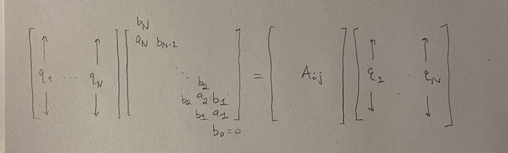
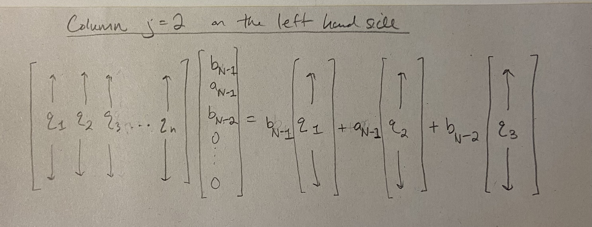

Script: Beta Ensembles & Tridiagonal Random Matrices
\[ \newcommand{\R}{\mathbb{R}} \newcommand{\N}{\mathbb{N}} \newcommand{\Z}{\mathbb{Z}} \newcommand{\Q}{\mathbb{Q}} \newcommand{\C}{\mathbb{C}} \newcommand{\eps}{\varepsilon} \DeclareMathOperator{\Tr}{Tr} \def\*#1{\mathbf{#1}} \]
0.1 Introduction
These notes are primarily based on Section 4.5 in Anderson, Guionnet, and Zeitouni (2010).
This handout is based on Section 2.5, 2.6, and 4.5 in Anderson, Guionnet, and Zeitouni (2010), and on Sections 13 and 14 in Kemp (2022). We also refer to Dumitriu and Edelman (2018). Throughout this handout, \(Z\) has referred to a constant whose value makes the associated term a probability density function or measure. Furthermore, we considered random elements on the probability space \((\Omega, \mathcal{F}, P)\). We also refered to \(\mathcal{N}(\mu, \sigma)\) as the Gaussian distribution on \(\mathbb R\) with mean \(\mu \in \mathbb R\) and variance \(\sigma > 0\). And the entry in the \(i\)th row and \(j\)th column of a matrix \(A\) was denoted \(A_{ij}\).
0.2 Notation
Let \(\R_+ = (0,\infty)\).
Let \(O(N) = \{O \in \mathbb R^{N \times N}: OO^T = I_N \}\). We define \[ O(N)^+ = \{ O \in O(N): O_{1,i} > 0 \text{ for all } i=1, \cdots, N \}. \] Similarly, we have \[ O(N)_+ = \{ O \in O(N): \text{first nonzero entry in each column of $O$ is positive} \}. \] Let \(H_N^{(1)}\) denote the set of all \(N \times N\) real symmetric matrices.
Let \(T_N^{(1)}\) denote the tridiagonal matrices with real entries of size \(N \times N\). Let \(\mathcal{T}_N\) denote the subset of tridiagonal matrices satisfying positivity on the off-diagonal. That is, if \((a_N, \cdots, a_1)\) and \((b_{N-1}, \cdots, b_1)\) characterize \(T \in \mathcal{T}_N\), then \(b_i > 0\) for all \(i\). We denote \(k\) dimensional Lebesgue measure on \(\R^{k}\) by \(\mathcal{L}_{k}\). But if the dummy variable of integration is, say, \(u\), then we would also write \(\int du\) for integration with respect to Lebesgue measure, and the dimension can be read off from the context.
We define \(\Delta_N^c = \{x_1 > x_2 > \cdots > x_N\} \subset \R^N\). We let \[S^{N-1} = \{ x \in \R^N: \lVert x \rVert = 1 \},\] and \[S_+^{N-1} = \{ x \in S^{N-1}: x_i > 0 \text{ for } i = 1, \cdots, N\}.\]
If we write \(D \in \Delta_N^c\), this means that \(D\) is an \(N \times N\) diagonal matrix with diagonal entries forming an element of \(\Delta_N^c\). In this way, we identify \(d \in \Delta_N^c\) with a diagonal matrix \(D\).
0.3 The \(\beta\) Ensembles
The \(\beta\) ensembles allow for presenting different matrix models all at once. The case \(\beta =1\) corresponds to the Gaussian Orthogonal Ensemble. The case \(\beta = 2\) corresponds to the Gaussian Unitary Ensemble. Interestingly, there is a matrix model, the so called tridiagonal matrix model, which corresponds to any \(\beta\). Is this useful for physics models where \(\beta \to \infty\)? The author of this handout is unsure.
Definition 1 (Statistics of \(N\) particle gas, \(\beta\)-ensemble, \(P_{V,\beta}^N\)) Let \(\lambda = (\lambda_1, \cdots, \lambda_N)\) be \(N\) real-valued random variables. We define \(P_{V,\beta}^N\) as the probability measure on \(\mathbb R^N\) whose density is proportional to \[ | \Delta(\lambda) |^\beta \exp \left( -N \sum_{i=1}^N V(\lambda_i) \right) = \exp \left( \beta \sum_{1 \le i < j \le N} \log |\lambda_j - \lambda_i| -N \sum_{i=1}^N V(\lambda_i) \right), \] where the above equality holds when the \(\lambda_i\) are all distinct. In the above, the parameter \(\beta\) is a real number greater than 0, the function \(V: \mathbb R \to \mathbb R\) satisfies continuity and logarithmic growth at infinity: for some \(\beta' \ge \beta\) where \(\beta' > 1\), we have \[ \liminf_{|x| \to \infty} \frac{V(x)}{\beta' \log|x|} > 1. \] We will discuss how integrability of the density function depends on this condition.
Proposition 1 (Logarithmic growth) Suppose \(V: \R \to \R\) is continuous, \(\beta > 0\), \(\beta' > 1\), \(\beta' \ge \beta\), and \(\liminf_{|x| \to \infty} \frac{V(x)}{\beta' \log|x|} > 1.\) Then \(f(\cdot): \R^N \to \R\) defined by \[ \lambda \mapsto \begin{cases} \exp \left( \beta \sum_{1 \le i < j \le N} \log |\lambda_j - \lambda_i| -N \sum_{i=1}^N V(\lambda_i) \right) & \text{if the }\lambda_i \text{ are distinct}\\ 0 & \text{else} \end{cases} \] is Borel measurable and satisfies \(\int_{\R^N} d\mathcal{L}_{N}(\lambda) f(\lambda) < \infty\).
Proof. In this proof we will write \(d\lambda = d\mathcal{L}_{N}(\lambda)\) to make the typing easier. Borel measurability follows from the fact that \(f\) is continuous. Note that \(f(\lambda) = | \Delta(\lambda) |^\beta \exp \left( -N \sum_{i=1}^N V(\lambda_i) \right)\) regardless of whether the \(\lambda_i\) are distinct or not, and in this way \(f\) can be seen to be composed of several continuous functions. Recall that \(\text{add}: \R^2 \to \R\), \((x_1, x_2) \mapsto x_1 + x_2\) is continuous. Recall also that \(|\Delta(\lambda) |^\beta = \prod_{1 \le i < j \le N} |\lambda_i - \lambda_j|^\beta\).
Next we study integrability.
In the following paragraph, we prove that there exists some \(M > 0\) such that \[V(x) > \beta' \log |x| \hspace{0.5cm}\text{ for all } |x| \ge M.\] Indeed, \(1\) is strictly less than the limit infimum of \(\frac{V(x)}{\beta' \log |x|}\) as \(|x| \to \infty\), which means that there is some \(M > 0\) so that \(\frac{V(x)}{\beta' \log |x|} > 1\) for all \(|x| \ge M\). Hence, \(V(x) > \beta' \log |x|\) for \(|x| \ge M\).
Let us split up the integral based on the \(M\) we found above:
\[ \int_{\R^N} d\lambda f(\lambda) = \int_{\R^N \setminus [-M,M]^N} d\lambda f(\lambda) + \int_{[-M,M]^N} d\lambda f(\lambda). \] In the rest of this paragraph, we argue that the integral over the region \([-M,M]^N\) is finite. Note that \(f\) is continuous, and in particular continuous on \([-M,M]^N\). Since \([M, M]^N\) is compact and continuous functions map compact domains to compact images, we see that \(f([-M,M]^N)\) is bounded in \(\R\). Together with the bounded \(N-\)dimensional Lebesgue measure of \([-M,M]^N\), we see that \(\int_{[-M,M]^N} d\lambda f(\lambda) < \infty\).
Next, \[ \int_{\R^N \setminus [-M,M]^N} d\lambda f(\lambda) = \int_{\R^N \setminus [-M,M]^N} d \lambda \exp \left( \beta \sum_{1 \le i < j \le N} \log |\lambda_j - \lambda_i| -N \sum_{i=1}^N V(\lambda_i) \right). \] The integrand on the right hand side is defined \(\mathcal{L}_{N}\) almost everywhere, and the section titled “Maps defined almost everywhere” on page 137 of Herbert Amann (2009) tells us how to make sense of this integral. In particular, we could define the right hand side as the integral \[ \int_{\R^N \setminus (I \cup [-M,M]^N)} d \lambda \exp \left( \beta \sum_{1 \le i < j \le N} \log |\lambda_j - \lambda_i| -N \sum_{i=1}^N V(\lambda_i) \right) \] where \(I = \{ x \in \R^N: x_i = x_j \text{ for some } i \ne j \}\) is a finite collection of \(1, 2, \cdots, N-1\) dimensional subspaces of \(\R^N\). For example, the constraint \(x_1 = x_2\) in the ambient space \(\R^3\) is a plane which projects down onto the line \(y = x\).
Next, \(V(x) > \beta' \log |x|\) for \(|x| \ge M\) implies \[ \int_{\R^N \setminus [-M,M]^N} d\lambda f(\lambda) \le \int_{\R^N \setminus [-M,M]^N} d \lambda \exp \left( \beta \sum_{1 \le i < j \le N} \log |\lambda_j - \lambda_i| -N \sum_{i=1}^N \beta' \log |\lambda_i| \right). \] Next, the inequality \[ \log|x-y| \le \log(|x| + 1) + \log (|y| + 1) \] implies that \[ \sum_{1 \le i < j \le N} \log |\lambda_j - \lambda_i| \le \sum_{1 \le i < j \le N} \log (|\lambda_j |+1) + \log( |\lambda_i| + 1). \] There appear \(N-1\) terms of the form \(\log(|\lambda_1| + 1)\) in the right hand summation above. A little bit more thought shows that this is also true for \(\log(|\lambda_i| + 1)\) where \(i = 1, 2, \cdots, N\). Hence, \[ \sum_{1 \le i < j \le N} \log (|\lambda_j |+1) + \log( |\lambda_i| + 1) = (N-1) \sum_{i=1}^N \log( |\lambda_i| + 1). \] We arrive at \[ \int_{\R^N \setminus [-M,M]^N} d\lambda f(\lambda) \le \int_{\R^N \setminus [-M,M]^N} d \lambda \exp \left( \beta (N-1) \sum_{i=1}^N \log( |\lambda_i| + 1) -N \sum_{i=1}^N \beta' \log |\lambda_i| \right). \] Next, \[\begin{align*} \exp \left( \beta (N-1) \sum_{i=1}^N \log( |\lambda_i| + 1) -N \sum_{i=1}^N \beta' \log |\lambda_i| \right) =\\ \exp \left( \beta (N-1) \sum_{i=1}^N \log(|\lambda_i| + 1) -\beta'(N-1) \sum_{i=1}^N \log |\lambda_i| - \beta' \sum_{i=1}^N \log |\lambda_i| \right) = \\ \exp \left( \beta \cdot (N-1) \left( \sum_{i=1}^N \log(|\lambda_i| + 1) -\frac{\beta'}{\beta} \sum_{i=1}^N \log |\lambda_i| \right) - \beta' \sum_{i=1}^N \log |\lambda_i| \right) = \\ \exp \left( \beta (N-1) \sum_{i=1}^N \log( \frac{ |\lambda_i| + 1 }{|\lambda_i|^{\frac{\beta'}{\beta}}}) - \sum_{i=1}^N \beta' \log |\lambda_i| \right) =\\ \prod_{i=1}^N \exp \left( \beta (N-1) \log( \frac{ |\lambda_i| + 1 }{|\lambda_i|^{\frac{\beta'}{\beta}}}) - \beta' \log |\lambda_i| \right) =\\ \prod_{i=1}^N \left( \frac{|\lambda_i| + 1}{|\lambda_i|^{\frac{\beta'}{\beta}}} \right)^{\beta (N-1)} \cdot \frac{1}{|\lambda_i|^{\beta'}}. \end{align*}\] From Analysis 1 and the fact that \(\beta' \ge \beta\), we have that \[ \frac{|x| + 1}{|x|^{\frac{\beta'}{\beta}}} = O(1) \text{ as }|x| \to \infty. \] Taking a function which is \(O(1)\) to the \(\beta \cdot (N-1)\) power remains \(O(1)\) as \(|x| \to \infty\). Hence, there exists some \(C > 0\) and \(M' > 0\) such that for all \(|x| \ge M'\), we have \[ \left( \frac{|x| + 1}{|x|^{\frac{\beta'}{\beta}}} \right)^{\beta \cdot (N-1)} \le C. \] Let us assume without loss of generality (by making \(M\) larger in the previous analysis) that \(M' \le M\). Hence, \[ \int_{\R^N \setminus [-M,M]^N} d\lambda f(\lambda) \le \int_{\R^N \setminus [-M,M]^N} d\lambda \prod_{i=1}^N C \cdot \frac{1}{|\lambda_i|^{\beta'}}. \] Since \(\beta' > 1\) and \(\frac{1}{|x|^{\beta'}}\) is integrable on \(\R \setminus (-\epsilon, \epsilon)\) for any \(\epsilon > 0\), we conclude that \[ \int_{\R^N \setminus [-M,M]^N} d\lambda f(\lambda) < \infty. \]
Example 1 (GOE) Let \(X_N\) be a GOE(N) matrix, as defined in Anderson, Guionnet, and Zeitouni (2010). By definition, we have that \(X_N\) is a symmetric real matrix, and the entries are all independent (apart from the entries below the diagonal) and distributed in the following way. \[\begin{align*} (X_N)_{i,i} &\sim \mathcal{N}(0,2) && \text{(on the diagonal)}\\ (X_N)_{i,j} &\sim \mathcal{N}(0,1) && \text{(above the diagonal)} \end{align*}\] Consider the \(N\) random unordered eigenvalues of \(X_N\): \[(\lambda_1, \cdots, \lambda_N).\] Their joint distribution has density \[ Z |\Delta(\lambda)| e^{-\sum_{i=1}^N \frac{\lambda_i^2}{4}}. \] It follows that \(\frac{1}{\sqrt{N}}(\lambda_1, \cdots, \lambda_N)\) has the \(\beta = 1\) ensemble distribution: \[ P(\frac{1}{\sqrt{N}}(\lambda_1, \cdots, \lambda_N) \in A) = \int_A dP_{\frac{x^2}{4}, 1}^N. \] with \(V(x) = \frac{\beta x^2}{4}\) in this case.
Example 2 (GUE) Let \(X_N\) be a GUE(N) matrix, so that \(X\) is an \(N \times N\) complex Hermitian matrix. According to the definition in Anderson, Guionnet, and Zeitouni (2010), the entries of \(X_N\) are distributed as follows. \[\begin{align*} (X_N)_{i,i} &\sim \mathcal{N}(0,1) && \text{(on diagonal)}\\ (X_N)_{i,j} & \sim \mathcal{N}(0, 1/2) + i \mathcal{N}(0, 1/2) && \text{(above diagonal)} \end{align*}\] The joint eigenvalue density is \[ Z |\Delta(\lambda)|^2 e^{-\sum_{i=1}^N \frac{2 \lambda_i^2}{4}}. \] Thus, the law of the rescaled eigenvalues \(\frac{1}{\sqrt{N}}(\lambda_1, \cdots, \lambda_N)\) is \(P_{V, \beta}^N\) where \(\beta = 2\) and \(V(x) = \frac{\beta x^2}{4}\).
0.4 Tridiagonal Matrix Representation of \(\beta\) ensembles
0.4.1 Preliminaries
Definition 2 (Tridiagonal matrix and its parametrization) A symmetric matrix \(X\) is tridiagonal if \(X_{ij} = 0\) whenever \(|i - j| > 1\). Vectors \(a = (a_1, \cdots, a_N)\) and \(b = (b_1, \cdots, b_{N-1})\) parametrize \(X\) by setting \(X_{ii} = a_{N-i + 1}\) and \(X_{i, i+1} = b_{N-i}\). That is, we have a map \(T\) given by \[ \R^{N} \times \R^{N-1} \ni (a,b) \mapsto T(a,b) = \begin{bmatrix} a_N & b_{N-1} & & & \\ b_{N-1} & a_{N-1} & b_{N-2} & & \\ & b_{N-2} & & & \\ & & \ddots& \ddots & \\ & & b_2& a_2&b_1 \\ & & & b_1& a_1 \end{bmatrix}. \] Whenever we refer to a tridiagonal matrix, it will always be symmetric. We call \(T_N^{(1)}\) the set of all tridiagonal (symmetric) matrices. We call \(\mathcal{T}_N\) the set of all tridiagonal matrices with \(b_i > 0\) for all \(i\).
Definition 3 (\(\Psi\) and \(\Psi^{-1}\)) Let \(a \in \R^N\), \(b \in \R_+^{N-1}\), \(u \in S_+^{N-1}\), and \(d \in \Delta_N^c\). The equation \[ T(a,b) = ODO^T \] where \(O \in O(N)^+\) has first row \(u\) and \(D = \text{diag}(d)\) defines a bijection \(\Psi: \Delta_N^c \times S_+^{N-1} \to \R^N \times \R^{N-1}_+\) given by \(\Psi(d,u) = (a,b)\). The inverse map \(\Psi^{-1}: \R^N \times \R^{N-1}_+ \to \Delta_N^c \times S_+^{N-1}\) is given by \(\Psi^{-1}(a,b) = (d,u)\).
In particular, given that \(\Psi(d,u) = (a,b)\), then there is a unique matrix \(D\) with diagonal \(d\) and a unique matrix \(O \in O(N)^+\) with first row \(u\) such that \(T(a,b) = ODO^T\). The same conclusion holds if we are given that \((d,u) = \Psi^{-1}(a,b)\).
See Corollary Corollary 4 and Corollary Corollary 3 for statements and proofs justifying the definition of \(\Psi\) and \(\Psi^{-1}\).
Lemma 1 (Jacobian Lemma) The map \(\Psi\) given by \[ \Delta_N^c \times S_+^{N-1} \ni (d, v) \mapsto (a, b) \in \mathbb {R}^N \times \mathbb {R}_+^{N-1} \] has Jacobian \(J: \Delta_N^c \times S_+^{N-1} \to [0,\infty]\) proportional to \[ \frac{\Delta(d)}{\prod_{i=1}^{N-1} b_i^{i-1}}. \]
Proof. See Section Section 0.6.
0.4.2 Dimitriu-Edelman Theorem
In one sentence, this section shows that placing Gaussian variables on the diagonal, and \(\chi\) random variables on the off-diagonal, then scaling by \(\sqrt{\beta}\), results in a random matrix whose (rescaled) eigenvalues have law corresponding to \(P_{\frac{\beta x^2}{4}, \beta}^N\) for general \(\beta\).
Definition 4 (\(\chi_t\) distribution with \(t\) degrees of freedom) The probability measure on \(\mathbb R\) with density \[ f_t(x) = 1_{\mathbb R_+}(x) \cdot C \cdot x^{t-1} e^{-\frac{x^2}{2}} \]
where \(C = \frac{2^{1-t/2}}{\Gamma(t/2)}\) is called the \(\chi\) distribution with \(t >0\) degrees of freedom.
Note that, if \(X = (X_1, \cdots, X_n) \in \mathbb R^n\) is a Gaussian random vector, then \(\lVert X \rVert_2 = \sqrt{\sum_{i=1}^N X_i^2}\) has the distribution \(\chi_n\), which motivates the \(t=n\) degrees of freedom in the name.
Lemma 2 Let \(t, \beta > 0\) be given. If \(X \sim \chi_t\), then \(\frac{1}{\sqrt{\beta}} X\) has probability density function proportional to \[ x^{t-1} e^{-\beta \frac{x^2}{2}}. \]
Proof. Let \(B\) be a Borel subset of \(\R_+\). Then \[\begin{align*} P[\frac{1}{\sqrt{\beta}}X \in B] &= P[X \in \sqrt{\beta} B] \\ &= \int_{\sqrt{\beta} B} C \cdot x^{t-1} e^{-\frac{x^2}{2}} dx \\ &= \int_{B} C \cdot (\sqrt{\beta} y)^{t-1} e^{-\beta \frac{x^2}{2}} dy \\ &= \int_B C_1 \cdot y^{t-1} e^{-\beta \frac{y^2}{2}} dy. \end{align*}\]
Definition 5 (Tridiagonal Matrix Representation of \(\beta\) ensemble for a fixed \(\beta\)) Assume \(\beta > 0\) is given. Let \(\{\xi_i\}_{i=1}^\infty\) be an independent family of \(\mathcal{N}(0,1)\) random variables. Let \(\{Y_i\}_{i=1}^\infty\) be an independent family of random variables, not identically distributed, but with \(Y_i \sim \chi_{i \beta}\) for all \(i = 1, 2, \cdots\). Assume also that the two families \(\{\xi_i\}_{i=1}^\infty\) and \(\{Y_i\}_{i=1}^\infty\) are independent.
Let \(N\) be a given positive integer. Define two random vectors \[ \* a = (a_1, \cdots, a_N): \Omega \to \R^N \] and \[ \* b = (b_1, \cdots, b_{N-1}): \Omega \to \R^{N-1} \] with \(a_i = \sqrt{2/\beta} \xi_i\) for \(i = 1, \cdots, N\) and \(b_i = \sqrt{1/\beta} Y_{i}\) for \(i = 1, \cdots, N-1\). Let \(T: \R^N \times \R_+^{N-1} \to T_N^{(1)}\) be the map \[ \R^N \times \R_+^{N-1} \ni (a_1, \cdots, a_N,b_1, \cdots, b_{N-1}) \mapsto \begin{bmatrix} a_N & b_{N-1} & & & \\ b_{N-1} & a_{N-1} & b_{N-2} & & \\ & b_{N-2} & & & \\ & & \ddots& \ddots & \\ & & b_2& a_2& b_1 \\ & & & b_1& a_1 \end{bmatrix} = T(a,b) \in T_N^{(1)}. \] Then we call the sequence of random matrices \[ T(\* a, \* b): \Omega \to T_N^{(1)} \] the tridiagonal matrix ensemble/model which represents the \(\beta\) ensemble.
The following illustrates the distribution of the entries of matrix from this tridiagonal model: \[ \frac{1}{\sqrt{\beta}}\begin{bmatrix} \sqrt{2} \mathcal{N}(0,1) & \chi_{\beta \cdot (N-1)} & & & & & \\ \chi_{\beta \cdot (N-1)} & \sqrt{2} \mathcal{N}(0,1) & \chi_{\beta \cdot (N-2)} & & & & \\ & \chi_{\beta \cdot (N-2)} & \sqrt{2} \mathcal{N}(0,1) & & & & \\ & & & \ddots & & & \\ & & & & \sqrt{2} \mathcal{N}(0,1) & \chi_{\beta \cdot (2)} & \\ & & & & \chi_{\beta \cdot (2)} & \sqrt{2} \mathcal{N}(0,1) & \chi_{\beta \cdot (1)} \\ & & & & & \chi_{\beta \cdot (1)} & \sqrt{2} \mathcal{N}(0,1) \end{bmatrix}. \]
Theorem 1 (Dimitriu-Edelman) Fix \(\beta > 0\) and suppose \(T(\* a, \* b): \Omega \to \mathcal{T}_N\) is a matrix from the tridiagonal matrix model, as above. If \((\lambda_1, \cdots, \lambda_N)\) denotes the random eigenvalues of \(T(\* a, \* b)\), then the joint law of these eigenvalues has density \[ Z |\Delta(\lambda)|^\beta e^{-\frac{\beta}{4} \sum_{i=1}^N \lambda_i^2}. \] In particular, \(\frac{1}{\sqrt{N}} \lambda = \frac{1}{\sqrt{N}}(\lambda_1, \cdots, \lambda_N)\) has joint law of the \(\beta\) ensemble: \[ P(\frac{1}{\sqrt{N}} \lambda \in A) = \int_A Z |\Delta(\lambda)|^\beta e^{-N \frac{\beta}{4} \sum_{i=1}^N \lambda_i^2} d\lambda = \int_A dP_{V, \beta}^N(\lambda) \] for \(V(x) = \frac{\beta x^2}{4},\) and \(A\) a Borel subset of \(\mathbb R^N\).
Proof. We want to show that \[ P(\lambda(T(\* a, \* b) ) \in B) = Z \int_B d\mathcal{L}_{N}(\lambda) |\Delta(\lambda)|^\beta e^{-\frac{\beta}{4} \sum_{i=1}^N \lambda_i^2} \] for any \(B \in \mathcal{B}(\Delta_N^c)\). Observe that \[\begin{align*} P(\lambda(T(\* a, \* b) ) \in B) &= \int_{\Omega} dP(\omega) \, 1_{\{\omega': \lambda(T(\* a, \* b)(\omega') ) \in B\}}(\omega)\\ &= \int_{\R^N \times \R_+^{N-1}} d(P_{\* a} \otimes P_{\* b})(a,b) 1_{\{(a',b'): \lambda(T(a',b') ) \in B\}}(a,b) \end{align*}\] Let us abbreviate \(1_{\{(a',b'): \lambda(T(a',b') ) \in B\}}(a,b) = I(a,b)\). Then using the formula for the density of the law \(P_{\* a} \otimes P_{\* b}\), we obtain \[\begin{align*} P(\lambda(T(\* a, \* b) ) \in B) &= \int_{\R^N \times \R_+^{N-1}} d\mathcal{L}_{2N-1}(a,b) I(a,b) e^{-\beta/4 \sum_{i=1}^N a_i^2-\beta/2 \sum_{i=1}^{N-1} b_i^2} \prod_{i=1}^{N-1} b_i^{i\beta - 1}. \end{align*}\] Then making a change of variable \((a,b) = \Psi(d,u)\), we obtain \[\begin{align*} P(\lambda(T(\* a, \* b) ) \in B) &= \int_{\Delta_N^c \times S_+^{N-1}} d\mathcal{L}_N(d) d\sigma(u) I(\Psi(d,u)) J(d,u) e^{-\beta/4 \sum_{i=1}^N a_i^2-\beta/2 \sum_{i=1}^{N-1} b_i^2} \prod_{i=1}^{N-1} b_i^{i\beta - 1}. \end{align*}\]
Lemma 3 For \((d,u) \in \Delta_N^c \times S_+^{N-1}\), we have \(I(\Psi(d,u)) = 1_{B \times S_+^{N-1}}(d,u)\).
Proof. Fix \((d,u) \in \Delta_N^c \times S_+^{N-1}\).
Let \((a,b) = \Psi(d,u)\). Then by Corollary 3, there exists a unique matrix \(Q \in O(N)^+\) with first row \(u\) and \(T(a,b) = QDQ^T\) where \(D = \text{diag}(d)\).
Consider the case that \(d \in B\). Observe that \(\lambda(T(a,b)) = d\) because \(T(a,b)\) has eigenvalue matrix \(D\). Thus, \(d \in B\) implies \(\lambda(T(a,b)) \in B\). Then \[\begin{align*} I(\Psi(d,u)) &= I(a,b) \\ &= 1_{\{(a',b'): \lambda(T(a',b') ) \in B\}}(a,b) \\ &= 1 = 1_{B \times S_+^{N-1}}(d,u). \end{align*}\]
If \(d \not \in B\), then \(\lambda(T(a,b)) \not \in B\), so \[\begin{align*} I(\Psi(d,u)) &= I(a,b) \\ &= 1_{\{(a',b'): \lambda(T(a',b') ) \in B\}}(a,b) \\ &= 0 = 1_{B \times S_+^{N-1}}(d,u). \end{align*}\] This concludes the proof.
Another consequence of the implication that \((a,b) = \Psi(d,u)\) results in a unique matrix \(Q \in O(N)^+\) with first row \(u\) and \(T(a,b) = QDQ^T\) where \(D = \text{diag}(d)\) is the following. \[\begin{align*} \sum_{i=1}^{N} a_i^2 + 2 \sum_{i=1}^{N-1} b_i^2 &= \Tr (T(a,b)^2) \\ &= \Tr (QDQ^TQDQ^T) \\ &= \Tr (D^2) = \sum_{i=1}^N d_i^2. \end{align*}\] Hence, we obtain \[\begin{align*} P(\lambda(T(\* a, \* b) ) \in B) &= \int_{\Delta_N^c \times S_+^{N-1}} d\mathcal{L}_N(d) d\sigma(u) 1_{B \times S_+^{N-1}}(d,u) J(d,u) e^{-\beta/4 \sum_{i=1}^N d_i^2} \prod_{i=1}^{N-1} b_i^{i\beta - 1}. \end{align*}\]
Since \[J(d,u) \propto \frac{\Delta(d)}{\prod_{i=1}^{N-1} b_i^{i-1}}\] by Lemma Lemma 1, we notice that \[\begin{align*} J(d,u)\prod_{i=1}^{N-1} b_i^{i\beta - 1} &\propto \frac{\Delta(d)}{\prod_{i=1}^{N-1} b_i^{i-1}} \prod_{i=1}^{N-1} b_i^{i\beta - 1} \\ &= \Delta(d) \prod_{i=1}^{N-1} \frac{b_i^{i \beta - 1}}{b_i^{i-1}} \\ &= \Delta(d) \prod_{i=1}^{N-1} b_i^{i(\beta-1)} \\ &= \Delta(d) \left( \prod_{i=1}^{N-1} b_i^i \right)^{(\beta - 1)}.\\ \end{align*}\] Lemma 4.5.37 in Anderson, Guionnet, and Zeitouni (2010), which we do not prove in these notes, says that \[ \Delta(d) = \frac{\prod_{i=1}^{N-1} b_i^i}{\prod_{i=1}^N u_i^i}. \] Together with the fact that \(\Delta(d) \ne 0\) for \(d \in \Delta_N^c\), we obtain \[\begin{align*} J(d,u)\prod_{i=1}^{N-1} b_i^{i\beta - 1} &\propto \Delta(d) \left( \prod_{i=1}^{N-1} b_i^i \right)^{(\beta - 1)}\\ &= \Delta(d)^{\beta + (1 - \beta)} \left( \prod_{i=1}^{N-1} b_i^i \right)^{(\beta - 1)} \\ &= \Delta(d)^{\beta} \left( \frac{\prod_{i=1}^{N-1} b_i^i}{\prod_{i=1}^N u_i^i} \right)^{1 - \beta} \left( \prod_{i=1}^{N-1} b_i^i \right)^{(\beta - 1)} \\ &= \Delta(d)^{\beta} \left( \prod_{i=1}^{N} u_i^i \right)^{(\beta - 1)}. \end{align*}\]
With this we obtain
\[\begin{align*} P(\lambda(T(\* a, \* b) ) \in B) &= \int_{\Delta_N^c \times S_+^{N-1}} d\mathcal{L}_N(d) d\sigma(u) 1_{B \times S_+^{N-1}}(d,u) e^{-\beta/4 \sum_{i=1}^N d_i^2} \Delta(d)^{\beta} \left( \prod_{i=1}^{N} u_i^i \right)^{(\beta - 1)} \\ &= \int_{S_+^{N-1}} d\sigma(u) \left( \prod_{i=1}^{N} u_i^i \right)^{(\beta - 1)} \int_{B} d\mathcal{L}_N(d) e^{-\beta/4 \sum_{i=1}^N d_i^2} \Delta(d)^{\beta}, \end{align*}\] which is what we needed to show, because \(\int_{S_+^{N-1}} d\sigma(u) \left( \prod_{i=1}^{N} u_i^i \right)^{(\beta - 1)}\) is a constant.
0.5 Tridiagonal Matrix Details
Let \(H_N^{(1)}\) denote the set of all \(N \times N\) real symmetric matrices. Let \(O(N) = \{O \in \mathbb R^{N \times N}: OO^T = I_N \}\).
Theorem 2 (Theorem 7.2.1 in Parlett (1998)) Let \(A\) be an arbitrary real symmetric \(N \times N\) matrix. Let \(T_+ = T(a,b) \in \mathcal{T}_N\) be a tridiagonal matrix parametrized by \(a \in \mathbb R^N\) and \(b \in \mathbb R_+^{N-1}\), where \(b_i >0\) for all \(i = 1, \cdots, N-1\). Let \(Q^TAQ = T_+\) with \(Q\) orthogonal. Then \(T_+\) and \(Q = (\* q_1, \* q_2, \cdots, \* q_N)\) (the columns of \(Q\)) are uniquely determined by \(A\) and \(\* q_1\).
Proof. The hypothesis can be written as \[ QT_+ = AQ \] by orthogonality of \(O\). Define \(b_N = 0\) and \(b_0 = 0\), as in figure Figure 1.

The \(j\)th column on the left hand side, as an element in \(\R^{N \times 1}\), is
\[ b_{N-j+1} \* q_{j-1} + a_{N-j+1} \* q_{j} + b_{N-j} \* q_{j+1}, \]
which can be seen in figure Figure 2.
Setting this equal to the \(j\)th column on the right hand side, we obtain \[ A \* q_j = b_{N-j+1} \* q_{j-1} + a_{N-j+1} \* q_{j} + b_{N-j} \* q_{j+1}, \]
or written in a recursive style:
\[ b_{N-j} \* q_{j+1} = A \* q_j - b_{N-j+1} \* q_{j-1} - a_{N-j+1} \* q_{j} \equiv \* r_j \]
for each \(j = 1, \cdots, N\). Observe that \(\* q_0\) is undefined because \(b_N = 0\) and \(\* q_{N+1}\) is undefined because \(b_0 = 0\). Also, \(\* r_N = 0\) because \(b_{N-N} \* q_{N+1} = 0 \cdot \* q_{N+1} = 0\). Written in tabular form, we have the equations
\[\left( \begin{array}{cccc} \* (j=1) & \* q_2 b_{N-1} = & A \*q_1 - \* q_1 a_N & = \* r_1 \\ (j=2)& \* q_3 b_{N-2} = & A\* q_2 - \* q_2 a_{N-1} - \* q_1 b_{N-1} & = \* r_2\\ \vdots& & &\\ (j=N-1) & \* q_N b_{1} = & A \* q_{N-1} - \* q_{N-1}a_{2} - \* q_{N-2}b_{2}& = \* r_{N-1} \\ (j=N)& 0= & A \* q_N - \* q_N a_1 - \* q_{N-1}b_{1} & = \* r_N \\ \end{array} \right) \tag{1}\]
Next we will exploit the fact that \(\* q_i^T \* q_j = \delta_{ij}\) for orthogonal matrices, which means also that \(\lVert \* q_i \rVert^2 = 1\), which implies that \(\lVert \* q_i \rVert = 1\). Left multiplying the \(j\)th equation by \(\* q_j^T\), we obtain
\[ \left( \begin{array}{ccc} \* (j=1) & 0 = & \*q_1^T A \*q_1 - a_N \\ (j=2)& 0 = & \* q_2^T A\* q_2 - a_{N-1}\\ \vdots& & \\ (j=N-1) & 0 = & \* q_{N-1}^T A \* q_{N-1} - a_{2} \\ (j=N)& 0= & \* q_N^TA \* q_N - a_1 \\ \end{array} \right). \tag{2}\]
Going down a different road by taking the norm of the \(j\)th equation yields
\[\left( \begin{array}{cccc} \* (j=1) & b_{N-1} = & \lVert \* q_2 b_{N-1} \rVert & = \lVert \* r_1 \rVert \\ (j=2)& b_{N-2} = & \lVert \* q_3 b_{N-2} \rVert & = \lVert \* r_2 \rVert\\ \vdots& & &\\ (j=N-1) & b_{1} = & \lVert \* q_N b_{1} \rVert & = \lVert \* r_{N-1} \rVert \\ (j=N)& 0= & 0 & = \lVert \* r_N \rVert \\ \end{array} \right). \tag{3}\]
Yet another perspective, using that \(b_i > 0\) for \(i = 1, \cdots, N-1\), yields \[\begin{equation} \left( \begin{array}{ccc} \* (j=1) & \* q_2 & = \* r_1 / b_{N-1} \\ (j=2)& \* q_3 & = \* r_2 / b_{N-2} \\ \vdots& & \\ (j=N-1) & \* q_N & = \* r_{N-1} / b_{1} \\ \end{array} \right). \end{equation}\]
Now suppose we are given inputs \(A\) and \(\*q_1\). Our task is to determine \[ T_+ = \begin{bmatrix} a_N & b_{N-1} & & & \\ b_{N-1} & a_{N-1} & b_{N-2} & & \\ & b_{N-2} & & & \\ & & \ddots& \ddots & \\ & & b_2& a_2&b_1 \\ & & & b_1& a_1 \end{bmatrix} \]
and \((\* q_2, \cdots, \*q_N)\) based on the above constraints.
Let’s begin with \(j=1\). Notice that \(a_N\) can be solved for based on the inputs using the 2nd set of constraints, and we get \(a_N = \* q_1^T A \* q_1\). In turn we can solve for \(\* r_1\) using the first set of constraints. Then using the third set of constraints, we obtain \(b_{N-1}\). Then using the fourth set of constraints, we obtain \(\* q_2\). Then the loop starts over again. We conclude that all the unknowns were obtained only with the initial inputs \(A\) and \(\* q_1\). Notice also that we found unique solutions \(Q\) and \(T_+\) when given \(A\) and \(\* q_1\). This was a result of the linearity of the constraints we used. This is important to notice in order to conclude that \(A\) and \(\* q_1\) uniquely determine \(Q\) and \(T_+\).
). ] In the second column, \(U \Lambda U^T\) denotes a unique eigendecomposition of \(T_+\) where the the signs of the first row of \(U\) are non-negative and the eigenvalues are ordered \(\lambda_1 < \cdots < \lambda_N\) on the diagonal of \(\Lambda\). This increasing order on the diagonal in Dumitriu and Edelman (2018) is not followed in Anderson, Guionnet, and Zeitouni (2010), which uses a decreasing order on the diagonal, which can be seen in the definition of \(\Delta_N^c = \{(x_1, \cdots, x_N) \in \R^N: x_1 > \cdots > x_N\}\). Note that the eigenvalues are distinct for \(T_+ \in \mathcal{T}_N\) by Lemma 4.5.36 in Anderson, Guionnet, and Zeitouni (2010). Furthermore, we’ve already adapted the proof of Theorem 7.2.1 in Parlett (1998) to match the parametrization of tridiagonal matrices used in Dumitriu and Edelman (2018) and Anderson, Guionnet, and Zeitouni (2010).
To see how (Theorem 2) defines a function, we recall:
Definition 6 (Function) Suppose \(A\) and \(B\) are sets. A function \(f\) from \(A\) to \(B\) is a subset \(f \subset A \times B\), denoted \(f: A \to B\), satisfying the property that for each \(a \in A\), the subset \(f\) contains exactly one ordered pair of the form \((a,b)\). The statement \((a,b) \in f\) is abbreviated \(f(a) = b\).
Corollary 1 The subset \[ \mathcal{S} = \{ (A, \* q_1, T_+, Q) \in H_N^{(1)} \times S^{N-1} \times \mathcal{T}_N \times O(N) \mid Q^T A Q = T_+ \text{ and } \* q_1 \text{ is the first column of } Q\} \] of \(H_N^{(1)} \times S^{N-1} \times \mathcal{T}_N \times O(N)\) defines a function \[\mathcal{S}: H_N^{(1)} \times S^{N-1} \to \mathcal{T}_N \times O(N)\] satisfying, for \(A \in H_N^{(1)}\) and \(q \in S^{N-1}\) the equation \[ \mathcal{S}_2(A,q)^T A \mathcal{S}_2(A,q) = \mathcal{S}_1(A,q). \] where \(\mathcal{S}_i\) denotes the \(i\)th component of the function \(\mathcal{S}\).
Proof. Fix \((A, \* q_1) \in H_N^{(1)} \times S^{N-1}\).
The proof of Theorem 2 gives an algorithm to obtain column vectors \(\* q_2, \cdots, \* q_N\) and \(a \in \R^N\) and \(b \in \R_+^{N-1}\) such that if we set \(Q = [\* q_1, \cdots, \* q_N]\) and \(T_+ = T(a,b)\), then \((A, \* q_1, T_+, Q) \in \mathcal{S},\) that is, \(\mathcal{S}(A, \* q) = (T_+, Q)\). Furthermore, the algorithm gave a unique output, so there is no other tuple \((A, \* q, T_+', Q') \in \mathcal{S}\).
Corollary 2 (Gamma) The subset \[\begin{align*} \Gamma = \{ (D, \* q_1, T_+, V) \in \Delta_N^c \times S_+^{N-1} \times \mathcal{T}_N \times O(N)^+ \mid (D, \* q_1, T_+, V^T ) \in \mathcal{S} \\ \text{ i.e. } T_+ = VDV^T \text{ and } \* q_1 \text{ is the first row of } V\} \end{align*}\] of \(\Delta_N^c \times S_+^{N-1} \times \mathcal{T}_N \times O(N)^+\) defines a function \[\Gamma: \Delta_N^c \times S_+^{N-1} \to \mathcal{T}_N \times O(N)\] such that for \(D \in \Delta_N^c\) and \(\* q_1 \in S_+^{N-1}\), if \((T_+, V) = \Gamma(D, \* q)\), then \[ V D V^T = T_+, \] and \(\* q_1\) is the first row of \(V\).
Proof. Fix \((D, \* q_1) \in \Delta_N^c \times S_+^{N-1}\). If we set \(A := D\), then the proof of Theorem Theorem 2 shows the existence and uniqueness of vectors \(\* q_2, \cdots, \* q_N\) in \(\R^N\) and \(a \in \R^N, b \in \R^{N-1}\) such that if \(Q = [\* q_1, \cdots, \* q_N]\) and \(T_+ = T(a,b)\), then \[ Q^T D Q = T_+. \] Then if we let \(V = Q^T\), we see that \(\* q_1\) is the first row of \(V\) and \[VDV^T = T_+.\] Since \(\* q_1 \in S_+^{N-1}\), we see that \(V \in O(N)^+\). Hence, \((D, \* q_1, T_+, V)\) is the unique tuple in the set \(\Gamma\), or in other words, \(\Gamma(D, \* q_1) = (T_+, V)\).
Corollary 3 (\(\Psi\)) The subset \[\begin{align*} \Psi = \{(D,\* q_1, a,b) \in \Delta_N^c \times S_+^{N-1} \times \R^N \times \R_+^{N-1} \mid \\ \exists! Q \in O(N)^+ \text{ with first row } \* q_1 \text{ and } T(a,b) = QDQ^T \} \end{align*}\] defines a function \[\Psi: \Delta_N^c \times S_+^{N-1} \to \R^N \times \R_+^{N-1}\] such that if \(D \in \Delta_N^c\) and \(\* q_1 \in S_+^{N-1}\), then there exists a unique matrix \(V \in O(N)^+\) whose first row is \(\* q_1\) and if \((a,b) = \Psi(D, \* q_1)\), then \[ VDV^T = T(a,b). \]
Proof. Let \((D, \* q_1) \in \Delta_N^c \times S_+^{N-1}\). Then from equation \(QAQ^T = T(a,b)\) and initial condition that \(Q^T\) has first column \(\* q_1\), and \(A = D\), we solve for a unique matrix \(Q^T\) with columns \([\* q_1, \* q_2, \cdots, \* q_N]\) and vectors \(a \in \R^N\) and \(b \in R_+^{N-1}\) using the algorithm in the proof of Theorem 2. This shows that there is only one tuple \((D,\* q_1, a,b) \in \Psi\), which proves that \(\Psi\) defines a function.
Then we see that \(Q\) has first row \(\* q_1\), and is thus the unique matrix \(O(N)^+\) such that \(QDQ^T = T(a,b)\).
Next, we want to show that \(\Psi\) is bijective. To do so we construct the map \(\Psi^{-1}\) using eigendecompositions of \(T_+\).
Lemma 4 (Lemma 4.5.36 Anderson, Guionnet, and Zeitouni (2010)) (Lemma 4.5.36 Anderson, Guionnet, and Zeitouni 2010) The eigenvalues of any \(T_+ \in \mathcal{T}_N\) are distinct, and all eigenvectors \(v = (v_1, \cdots, v_N)\) of \(T_+\) satisfy \(v_1 \ne 0\).
Proof. Fix \(T_+ \in \mathcal{T}_N\) with parametrization \((a,b) \in \R^N \times \R_+^{N-1}\). This matrix \(T_+\) has distinct eigenvalues if and only if there does not exist some eigenvalue \(\lambda\) with two or more linearly independent eigenvectors. In other words, \[\dim \text{Eig}(T_+, \lambda) \le 1\] for any eigenvalue \(\lambda\).
Let \(\lambda\) be an eigenvalue of \(T_+\). Recall that \(\text{Eig}(T_+, \lambda) = \text{null} (T_+ - \lambda)\). We will show that \(\text{null} (T_+ - \lambda) = \text{Span}_{\R}(z)\) where \(z\) is a vector in \(\mathbb R^N\) written in terms of \(a,b,\) and \(\lambda\). Let \(v = (v_1, \cdots, v_N) \in \text{null} (T_+ - \lambda)\) be given. Then \((T_+ - \lambda)v = 0\) corresponds to \(N\) equations;
\[\begin{equation} \label{eigenspace} \left( \begin{array}{ccc} (\text{row } 1) & (a_N - \lambda)v_1 + b_{N-1} v_2 &= 0\\ (\text{row } 2) & b_{N-1} v_1 + (a_{N-1} - \lambda)v_2 + b_{N-2} v_3 &= 0 \\ (\text{row } j = 2, \cdots, N-1) & b_{N-j+1} v_{j-1} + (a_{N-j+1} - \lambda)v_{j-1} + b_{N-j}v_{j+1} &= 0 \\ (\text{row } N) & b_1 v_{N-1} + (a_1-\lambda) v_N &= 0. \end{array} \right). \end{equation}\] First notice the trivial fact:
\[ v_1 = v_1 \cdot 1. \] Then solving in the first row for \(v_2\) yields
\[ v_2 = v_1 \cdot \frac{-(a_N - \lambda)}{b_{N-1}} \]
Solving for \(v_3\) yields \[ v_3 = v_1 \cdot \left( \frac{(a_{N-1} - \lambda)(a_N - \lambda)}{b_{N-2} b_{N-1}} - \frac{b_{N-1}}{b_{N-2}} \right). \] Continuing in this manner determines some
\[ z = [1, \frac{-(a_N - \lambda)}{b_{N-1}}, \frac{(a_{N-1} - \lambda)(a_N - \lambda)}{b_{N-2} b_{N-1}} - \frac{b_{N-1}}{b_{N-2}}, \cdots]^T \in \mathbb R^N \]
which depends on \(a,b, \lambda\). Notice that we have used the positivity of \(b\) many times in this proof. Furthermore, \(v = v_1 \cdot z\). In other words, we have shown that \(\text{null} (T_+ - \lambda) \subset \text{Span}_{\R}(z)\), which is enough, by the previous remarks, to conclude that the eigenvalues of \(T_+\) are distinct.
Next, suppose \(v\) is an eigenvector of \(T_+\) associated to an eigenvalue \(\lambda\). Then by the previous paragraph, we see that \(v = v_1 \cdot z\) for some \(z\) depending on \(a, b, \lambda\). If \(v_1 = 0\), then \(v = 0\), which contradicts the definition of an eigenvector. This concludes the proof.
Proposition 2 (Setting up the inverse to \(\Psi\)) Suppose \[T_+ = T(a,b) = \begin{bmatrix} a_N & b_{N-1} & & & \\ b_{N-1} & a_{N-1} & b_{N-2} & & \\ & b_{N-2} & & & \\ & & \ddots& \ddots & \\ & & b_2& a_2&b_1 \\ & & & b_1& a_1 \end{bmatrix}\] where \(a = (a_1, \cdots, a_N) \in \mathbb R^N\) and \(b = (b_1, \cdots, b_{N-1}) \in \R_+^{N-1}\) is given. Then there exist unique data \((D, \* q_1, Q) \in \Delta_N^c \times S_+^{N-1} \times O(N)^+\) such that \(\* q_1\) is the first row of \(Q\) and
\[ T_+ = QDQ^T. \]
That is, if \(D', \* q_1',\) and \(Q'\) are any other such elements with these properties, then we have \((D', \* q_1', Q') = (D, \* q_1, Q)\).
Proof. Let \(a \in \R^N\) and \(b \in \R_+^{N-1}\) be given. Then \(T_+ = T(a,b)\) is symmetric. Therefore there exists an eigendecomposition \(T_+ = V' D' V'^T\) where \(V' \in O(N)\) and \(D'\) is diagonal. A-priori, \(D'\) could be in the complement of \(\Delta_N^c\), so we don’t have existence yet. However, we take for granted that there exists a permutation matrix \(P \in O(N)\) such that \(P^TDP \in \{d_1 \ge \cdots \ge d_N\}\). For example if \(D = [[1,0],[0,3]]\), then the permutation matrix \(P = [[0,1],[1,0]]\) gives us \(P^TDP \in \Delta_2^c\).
Then we use that
\[ T_+ = V'D'V'^T = (VP)P^TDP(VP)^T =: VDV^T\]
where we set \(V = V'P\) and \(D = P^TD'P\). Still, \(D\) might not have distinct entries. But by Lemma 4.5.36 of Anderson, Guionnet, and Zeitouni (2010), it does have distinct entries. Hence, \(D \in \Delta_N^c\), which proves existence. Since \(D\) consists of eigenvalues of \(T_+\) in decreasing order, there is no other possibility for \(D\), so we conclude that it is unique.
Notice that each column of \(V\) is an eigenvector of \(T_+\). For instance, writing \([\* v_1, \cdots, \* v_N] = V\), we have
\[ T_+ \* v_1 = V D V^T \* v_1 = V (d_1 \* e_1) = d_1 \* v_1. \]
Lemma 4.5.36 says that \(\* v_1^1, \cdots, \* v_N^1 \ne 0\), that is: the first entry of each eigenvector is not equal to zero. But some of these first nonzero entries could be negative, so we don’t yet know there exists \(Q \in O(N)^+\) with first row \(\* q_1 \in S_+^{N-1}\) such that \(T_+ = QDQ^T\). However, we take for granted that there is some matrix \(\Delta \in DO(N)\), the matrices with \(\pm 1\) on the diagonal and zeros everywhere else, such that, if we let \(Q = V \Delta\), then \(Q \in O(N)^+\) and has first row \(\* q_1 \in S_+^{N-1}\).
We know that \(QDQ^T = T_+\) because the columns of \(Q\) are still eigenvectors of \(T_+\), as multiplying an eigenvector by \(-1\) remains an eigenvector. Hence, we have proved existence of \(Q\) and \(\* q_1\). Let us denote the columns of \(Q\) by \([\* v_1, \cdots, \* v_N]\), forgetting the notation we used for \(V\).
Now we study the uniqueness of \(Q\) (and thus, uniqueness of \(\* q_1\).)
Let \((\* q_1', V') \in S_+^{N-1} \times O(N)\) so that \(\* q_1'\) is the first row of \(V'\) and \(T_+ = V'DV'^T\). Write \(V' = [\* v_1', \cdots, \* v_N']\). Then as before, we see that \(\* v_i'\) is an eigenvector of \(T_+\) corresponding to the eigenvalue \(d_i\). Each column of \(V'\) is of norm 1, and each column of \(V'\) takes values in a one-dimensional eigenspace. This implies that \(\* v_i'\) is either equal to \(\* v_i\) or \(-\* v_i\). But if \(\* v_i'\) were equal to \(-\* v_i\), then its first entry would be negative, which would contradict the assumption about \(\* q_1'\), the first row of \(V'\), being an element of \(S_+^{N-1}\). Thus, \(\* v_i' = \* v_i\) for all \(i = 1, \cdots, N\). That is, \(V' = Q\). This concludes the proof of uniqueness.
Corollary 4 (\(\Psi^{-1}\)) The set \[\begin{align*} \Psi^{-1} = \{ (a,b, D, \* q_1) \in \R^N \times \R_+^{N-1} \times \Delta_N^c \times S_+^{N-1} \mid \exists! Q \in O(N)^+ \\ \text{ with }\* q_1 \text{ the first row of }Q \text{ and } T(a,b) = QDQ^T \} \end{align*}\] defines a function \[\Psi^{-1}: \R^N \times \R_+^{N-1} \to \Delta_N^c \times S_+^{N-1}.\] Furthermore, this function is the inverse function to the function \(\Psi\).
Proof. Fix \((a,b) \in \R^N \times \R_+^{N-1}\). Then by Proposition Proposition 2 there exists a unique tuple \((D, \* q_1, Q) \in \Delta_N^c \times S_+^{N-1} \times O(N)^+\) such that \(\* q_1\) is the first row of \(Q\) and
\[ T(a,b) = QDQ^T. \]
Then we see that \((a,b,D, \* q_1) \in \Psi^{-1}\) and there could be no other such tuple \((a,b,D', \* q_1') \in \Psi^{-1}\). This proves that \(\Psi^{-1}\) is a function.
Next we show that \(\Psi^{-1}\) is the inverse to \(\Psi\), which is defined in Corollary Corollary 3. First we show that \(\Psi^{-1} \circ \Psi: \Delta_N^c \times S_+^{N-1} \to \Delta_N^c \times S_+^{N-1}\) is equal to the identity function. Fix \((D, \* q_1) \in \Delta_N^c \times S_+^{N-1}\). Let \((a,b) = \Psi(D, \* q_1).\) By Corollary Corollary 3, there exists a unique \(V \in O(N)^+\) with first row \(\* q_1\) and \(T(a,b) = VDV^T\). By definition of \(\Psi^{-1}\), this implies that \(\Psi^{-1}(a,b) = (D, \* q_1)\). Therefore, \((\Psi^{-1} \circ \Psi)(D, \* q_1) = (D, \* q_1)\).
Next we show that \(\Psi \circ \Psi^{-1}: \R^N \times \R_+^{N-1} \to \R^N \times \R_+^{N-1}\) is the identity function. Let \((a,b)\) be given. Let \((D, \* q_1) = \Psi^{-1}(a,b)\). Hence, there exists a unique \(Q \in O(N)^+\) with first row \(\* q_1\) and \(T(a,b) = QDQ^T\). Therefore, \(\Psi(D, \* q_1) = (a,b)\), by Corollary Corollary 3. Hence, \((\Psi \circ \Psi^{-1})(a,b) = (a,b).\)
0.6 Jacobian Lemma Proof
Recall that \(\Delta_N^c = \{ (x_1, \cdots, x_N) \in \mathbb R^N: x_1 > \cdots > x_N \}\) and that \(H_N^{(1)}\) denotes the real \(N\times N\) symmetric matrices, which we can view as the manifold \(\mathbb R^{N(N+1)/2}\).
Let \(C\) be a constant which depends only on the dimension \(N\) and the constant \(\beta\), whose value may change between displays. We make this convention so that we don’t have to write down the normalization and proportionality constants.
Let \(g: \Delta_N^c \times S_+^{N-1} \to \mathbb R_+\) be a suitable test function. We will show that \[ \begin{align} \int_{\Delta_N^c \times S_+^{N-1}} d\mathcal{L}_{N}(d) d\sigma_{S^{N-1}} (u) \, g( d, u) |\Delta(d)| e^{-\sum_{i=1}^N d_i^2/4} \\ = C \int_{\Delta_N^c \times S_+^{N-1}} d\mathcal{L}_{N}(d) d\sigma_{S^{N-1}} (u) \, g( d, u) J( d, u ) e^{-\sum_{i=1}^N d_i^2/4} \prod_{i=1}^{N-1} b_i^{i-1} \end{align} \tag{4}\]
where \(\mathcal{L}_{N}(d)\) denotes \(N\)-fold product Lebesgue measure in the integration variable \(d\) and \(d \sigma_{S^{N-1}}(u)\) denotes uniform measure on the unit sphere in \(\mathbb R^N\) in the variable \(u\). Since \(g\) is arbitrary (and using the non-negativity of the remaining integrands) it follows that \[ C |\Delta(d)| e^{-\sum_{i=1}^N d_i^2/4} = J(u, d) e^{-\sum_{i=1}^N d_i^2/4} \prod_{i=1}^{N-1} b_i^{i-1} \] for almost every \((d, u) \in \Delta_N^c \times S_+^{N-1}.\) Then it is easy to see that \[ J(u, d) = C \frac{\Delta(d)}{\prod_{i=1}^{N-1} b_i^{i-1}}. \]
We begin with expression Equation 4. Our first goal is to extend integration to \(O(N)\). As a first step, by Fubini’s Theorem, we obtain \[\begin{align*} \int_{\Delta_N^c \times S_+^{N-1}} d\mathcal{L}_{N}(d) d\sigma_{S^{N-1}} (u) g( d, u) |\Delta(d)| e^{-\sum_{i=1}^N d_i^2/4} =\\ \int_{\Delta_N^c} d\mathcal{L}_{N}(d)\, |\Delta(d)| e^{-\sum_{i=1}^N d_i^2/4} \left( \int_{S_+^{N-1}} d\sigma_{S^{N-1}} (u) g(d,u) \right). \end{align*}\]
To make life easier, let’s also extend \(g\) to \(\Delta_N^c \times S^{N-1}\) by setting \[ g(d,u) = \begin{cases} g(d,u) & \text{if } u \in S_+^{N-1}\\ 0 & \text{if } u \in S^{N-1} \setminus S_+^{N-1}. \end{cases} \] Then we have \[\begin{align*} \int_{\Delta_N^c} d\mathcal{L}_{N}(d)\, |\Delta(d)| e^{-\sum_{i=1}^N d_i^2/4} \left( \int_{S_+^{N-1}} d\sigma_{S^{N-1}} (u) g(d,u) \right) =\\ \int_{\Delta_N^c} d\mathcal{L}_{N}(d)\, |\Delta(d)| e^{-\sum_{i=1}^N d_i^2/4} \left( \int_{S^{N-1}} d\sigma_{S^{N-1}}(u) \, g(d,u) \right) \end{align*}\]
Now fix \(d \in \Delta_N^c\) and let’s claim the following:
Lemma 5 \[ C \int_{S^{N-1}} d\sigma_{S^{N-1}} (u) g(d,u) = \int_{O(N)} d \text{Haar}_{O(N)} (O) g(d,f(O)). \] where \(f: O(N) \to S^{N-1}\) is the smooth map behaving as \(O \mapsto \text{first row of }O\). Also, by \(d \text{Haar}_{O(N)}\) we mean the probability Haar measure.
Proof. Consider the following formula, appearing as Corollary 4.1.10 in Anderson, Guionnet, and Zeitouni (2010).
\[\begin{align*} \int_{O(N)} d\text{Vol}_{O(N)}(O) \, \phi(f(O)) J(\mathbb T_O(f)) &= \int_{S^{N-1} \setminus W} d\text{Vol}_{S^{N-1}}(u) \, \rho(f^{-1}(u)) \phi(u) \\ &= \int_{S^{N-1}} d\text{Vol}_{S^{N-1}}(u) \, \text{Vol}(O(N-1)) \phi(u) \end{align*}\] where \(\phi\) is a non-negative Borel measurable function on \(S^{N-1}\), and \(J(\mathbb T_O(f))\) is the generalized determinant (see Def. F.17 of Anderson, Guionnet, and Zeitouni (2010)) of the derivative of \(f\) at \(O\), denoted \(\mathbb T_O(f)\) (see Definition F.3 and the following paragraph in Anderson, Guionnet, and Zeitouni (2010)). Also, by \(W\) we mean the negligible set of critical values of \(f\), which are the points in \(u \in S^{N-1}\) for which there is some \(O \in O(N)\) whose first row is \(u\), and the derivative of \(f\) at \(O\) is not onto. See Definition F.9 in Anderson, Guionnet, and Zeitouni (2010). However, Lemma 4.1.17 of Anderson, Guionnet, and Zeitouni (2010) tells us that every value of \(f\) is regular, so actually \(W = \emptyset\).
Furthermore, \(\rho\) on the right hand side denotes volume measure on the fiber \(f^{-1}(u)\), which is a submanifold of \(O(N)\). Lemma 4.1.16 of Anderson, Guionnet, and Zeitouni (2010) tells us that \(f^{-1}(u)\) is isometric to \(O(N-1)\) for any \(u \in S^{N-1}\), so we in fact have that \(\rho(f^{-1}(u)) = \text{Vol}(O(N-1))\).
Another thing that Lemma 4.1.17 tells us is that \(J(\mathbb T_O(f)) = \sqrt{2}^{1-N}\) for all \(O \in O(N)\). Hence, we obtain
\[\begin{align*} \sqrt{2}^{1-N} \int_{O(N)} d\text{Vol}_{O(N)}(O) \, \phi(f(O)) &= \int_{S^{N-1}} d\text{Vol}_{S^{N-1}}(u) \, \text{Vol}(O(N-1)) \phi(u). \end{align*}\]
We have the following proportionality relations: \[d\text{Vol}_{O(N)} = \text{Vol}(O(N)) d\text{Haar}_{O(N)}\] and \[d\text{Vol}_{S^{N-1}} = \text{Vol}(S^{N-1}) d\sigma_{S^{N-1}}.\]
Hence, \[\begin{align*} \sqrt{2}^{1-N} \int_{O(N)} \text{Vol}(O(N)) d\text{Haar}_{O(N)}(O) \, \phi(f(O)) &= \int_{S^{N-1}} \text{Vol}(S^{N-1}) d\sigma_{S^{N-1}} (u) \, \text{Vol}(O(N-1)) \phi(u) \end{align*}\]
Collecting all the constants on the left hand side into one constant \(C\) which depends only on \(N\), and choosing for \(\phi\) the function \(g(d, \cdot): S^{N-1} \to \mathbb R_+,\) we obtain \[\begin{align*} C \int_{O(N)} d\text{Haar}_{O(N)}(O) \, g(d,f(O)) &= \int_{S^{N-1}} d\sigma_{S^{N-1}} (u) \, g(d,u), \end{align*}\] as desired.
After Claim 2.5, we have achieved our first goal of extending integration to \(O(N)\), and we next study the expression
\[ \int_{\Delta_N^c} d\mathcal{L}_{N}(d)\, |\Delta(d)| e^{-\sum_{i=1}^N d_i^2/4} \left( \int_{O(N)} d \text{Haar}_{O(N)} (O) g(d,f(O)) \right) \tag{5}\]
where \(f: O(N) \to S^{N-1}\) takes an orthogonal matrix \(O\) to its first row. The next goal is to exchange integration over the product \(\Delta_N^c \times O(N)\) with integration over \(\mathbb R^{N(N+1)/2}\) with respect to the matrix law of the Gaussian Orthogonal Ensemble. In this maneuver we follow section 14 of Kemp (2022).
In the sequel, we identify elements \(d \in \Delta_N^c\) with diagonal matrices \(D\) with distinct and decreasing entries down the main diagonal. Recall that \(H_N^{(1)}\) denotes the real symmetric \(N \times N\) matrices.
Let \[\begin{align*} S: & O(N) \times \Delta_N^c \to H_N^{(1)} \\ & (Q, D) \mapsto Q D Q^T. \end{align*}\]
Let \((H_N^{(1)})^*\) be the subset of \(H_N^{(1)}\) consisting of those symmetric matrices with distinct eigenvalues. Based on Section 2.5.2 in Anderson, Guionnet, and Zeitouni (2010), we know that \(H_N^{(1)} \setminus (H_N^{(1)})^*\) has Lebesgue measure zero. Let \[ O(N)_+ = \{ O \in O(N): \text{first nonzero entry in each column of $O$ is positive} \}, \] which we compare to \[ O(N)^+ = \{ O \in O(N): O_{1,i} > 0 \text{ for all } i=1, \cdots, N \}. \] Let \[G = (G_d, G_o): (H_N^{(1)})^* \to \Delta_N^c \times O(N)_+\] be the map which sends \(X = O D O^T \in H_N^{(1)}\) to \((d, O)\). Note that \(O\) is uniquely determined by \(X\) by requiring its first non-zero entry in each column to be positive. Just define \(G\) arbitrarily on the null set \(H_N^{(1)} \setminus (H_N^{(1)})^*\).
\(G\) is basically an inverse to the map \(S\). We make all these remarks because we want to view (Equation 5) as the right hand side of (14.9) in Kemp (2022): \[ \int_{O(N)} d \text{Haar}_{O(N)}(O) \, \int_{\Delta_N^c} d \mathcal{L}_{N}(d) \, \phi (O D O^T) |\Delta(d)| \] for suitable \(\phi \in L^1(H_N^{(1)})\). Note that in Kemp (2022) it is actually written \(O^T D O\) instead of \(O D O^T\), but we can pass to the form written here by a change of variable \(V = O^T\).
Let’s check how to pick \(\phi\). We want: \[ \phi(ODO^T) = g(d, f(O)) \cdot e^{-\sum_{i=1}^N d_i^2/4} \] for all relevant \((d,O)\). This suggests that \[ \phi(X) = (g(\cdot, f(\cdot)) \circ G)(X) \cdot e^{-\frac{1}{4} \Tr(X^2)} = g(G_d(X), f(G_o(X))) \cdot e^{-\frac{1}{4} \Tr(X^2)}. \] for all \(X \in (H_N^{(1)})^*\).
With this in mind, we obtain by (14.9) of Kemp (2022) (using that integrals are not affected by null sets to deal with the question of \(G\)) \[\begin{align*} \int_{\Delta_N^c} d\mathcal{L}_{N}(d)\, |\Delta(d)| e^{-\sum_{i=1}^N d_i^2/4} \left( \int_{O(N)} d \text{Haar}_{O(N)} (O) g(d,f(O)) \right) =\\ C \int_{\mathbb R^{N(N+1)/2}} d\mathcal{L}_{N(N+1)/2}(X) \, g(G_d(X), f(G_o(X))) \cdot e^{-\frac{1}{4} \Tr(X^2)}. \end{align*}\] Observe that we have achieved our second goal.
Our third goal is to replace the law of the above diagonal entries (which are \(\mathcal{N}(0,1)\)) by the laws of \(\chi\) random variables. Of course, we don’t actually have random variables here, but this is anyways the idea.
It turns out that there are a sequence of \(N-1\) so-called Householder transformations \(H_1, \cdots, H_{N-1}\), each of them orthogonal, such that \(H_1XH_1^T\) has the Gaussians to the right of the first diagonal entry compressed into the entry 1,2. Meanwhile \(H_2H_1 X H_1^T H_2^T\) has the same first row as \(H_1XH_1^T\) but compresses the entries to the right of the second diagonal entry into one entry in position 2,3. This pattern continues. Thus, instead of integrating over \(X\), we can actually integrate over the tridiagonal form \(T(a,b) = H_{N-1} \cdots H_1 X H_1^T \cdots H_{N-1}^T\), which means we integrate over the variables \(a\) and \(b\) instead of the variables \(X_{ij}\) for \(1 \le i \le j \le N\). In this maneuver, we can think of the following identifications, which are not completely rigorous, but which capture the idea: \[b_{N-1} = \lVert ([H_1XH_1^T]_{2,i})_{i=3}^N \rVert\] \[b_{N-2} = \lVert ([H_{2}H_1XH_1^TH_{2}^T]_{3,i})_{i=4}^N \rVert\] and so forth down to \[b_{1} = \lVert ([H_{N-1} \cdots H_{2}H_1XH_1^TH_{2}^T \cdots H_{N-1}^T]_{N-1,i})_{i=N-1}^{N-1} \rVert.\] As well as \[a_{N} = X_{1,1}\] \[a_{N-1} = [H_1XH_1^T]_{2,2}\] \[a_{N-2} = [H_{2}H_1 X H_1^T H_{2}^T]_{3,3}\] and so forth down to \[a_{1} = [H_{N-1} \cdots H_{2} H_1 X H_1^T H_{2}^T \cdots H_{N-1}^T]_{N,N}.\]
Let \(Z_{N-1} = [X_{1,2}, X_{1,3}, \cdots, X_{1,N}]^T.\) Let \(\tilde{H}_1 \in O(N-1)\) such that \[ \tilde{H}_1 Z_{N-1} = (\lVert Z_{N-1} \rVert, 0, \cdots, 0)^T \in \mathbb R^{N-1}. \tag{6}\] Let \(H_1 = \begin{bmatrix} 1 & 0 \\ 0 & \tilde{H}_1 \end{bmatrix}.\) Observe that \(H_1\) and \(\tilde{H}_1\) depend on \(X\). Let \(X_{N-1}\) be the matrix obtained from \(X\) by removing the first row and first column. Then \[ H_1 X H_1^T = \begin{bmatrix} X_{11} & \lVert Z_{N-1} \rVert & 0_{N-2} \\ \lVert Z_{N-1} \rVert & & \\ 0_{N-2} & & \tilde{H_1} X_{N-1} \tilde{H_1}^T \end{bmatrix}. \]
Lemma 6 For all symmetric matrices \(X\), it follows that, if \(H_1\) is some orthogonal matrix obtained from \(X\) as above, then \[g(G_d(X), f(G_o(X))) e^{-\frac{1}{4} \Tr (X^2)} = g(G_d(H_1 X H_1^T), f(G_o(H_1 X H_1^T))) e^{-\frac{1}{4} \Tr ((H_1XH_1^T)^2)}.\]
Proof. Note \(G_d(H_1 X H_1^T) = G_d(X)\) because eigenvalues are not affected by orthogonal similarity transformations. And \(f(G_o(H_1 X H_1^T)) = f(G_o(X))\) because \(X = ODO^T\), and then \(H_1 X H_1^T = (H_1O) D (H_1O)^T\), and \(O\) and \(H_1O\) have the same first row. And \[\begin{align*} e^{-\frac{1}{4} \Tr ((H_1XH_1^T)^2)} &= e^{-\frac{1}{4} \Tr (H_1XH_1^TH_1XH_1^T)} = e^{-\frac{1}{4} \Tr ((H_1X^2)H_1^T)}\\ &= e^{-\frac{1}{4} \Tr (H_1^T(H_1X^2))} && \Tr(AB) = \Tr(BA)\\ &= e^{-\frac{1}{4} \Tr (X^2)}, \end{align*}\] concluding the proof.
Then by substitution, \[\begin{align*} \int_{\mathbb R^{N(N+1)/2}} d\mathcal{L}_{N(N+1)/2}(X) \, g(G_d(X), f(G_o(X))) \cdot e^{-\frac{1}{4} \Tr(X^2)} \\ = \int_{\mathbb R^{N(N+1)/2}} d\mathcal{L}_{N(N+1)/2}(X) \, g(G_d(H_1XH_1^T), f(G_o(H_1XH_1^T))) \cdot e^{-\frac{1}{4} \Tr((H_1XH_1^T)^2)}. \end{align*}\]
By Fubini, we can leave \(Z_{N-1}^T = X_{1,2}, \cdots, X_{1,N}\) varying, while fixing the rest of the matrix variables, obtaining the expression \[ \begin{equation} \int_{\R^{N(N+1)/2 - (N-1)}} d \begin{bmatrix} X_{11} & \widehat{Z_{N-1}^T} \\ & X_{N-1} \end{bmatrix} \int_{\R^{N-1}} dX_{12} dX_{13} \cdots d X_{1N} \, \phi(H_1XH_1^T). \end{equation} \tag{7}\]
Lemma 7 The expression Equation 7 is equal to
\[ C \int_{\R^{N(N+1)/2 - (N-1)}} d \begin{bmatrix} X_{11} & \widehat{Z_{N-1}^T} \\ & X_{N-1} \end{bmatrix} \int_{\R_+} d\mathcal{L}_{1}(b_{N-1}) \, b_{N-1}^{N-2} \phi \left( \begin{bmatrix} X_{11} & b_{N-1} & 0_{N-2} \\ b_{N-1} & & \\ & \tilde{H}_1 X_{N-1} \tilde{H}_1^T & \\ 0_{N-2} & & \end{bmatrix} \right) \tag{8}\]
where \(C\) depends only on \(N\), and where \(\widehat{Z_{N-1}^T}\) indicates the removal of the variables \((X_{12}, \cdots, X_{1N}) = Z_{N-1}^T\) from the outer integration.
Proof. Since \(X_{11}\) and \(X_{N-1}\) (the variables \(X_{ij}\) for \(2 \le i \le j \le N\)) are fixed in the inner integral, then let us define both \(h: \R^{N-1} \to \R\) and \(h_1: \R_+ \to \R\) by \[h(X_{12}, \cdots, X_{1N}) = h_1 (\lVert Z_{N-1} \rVert) = \phi \left( \begin{bmatrix} X_{11} & \lVert Z_{N-1} \rVert & 0_{N-2} \\ \lVert Z_{N-1} \rVert & & \\ & \tilde{H}_1 X_{N-1} \tilde{H}_1^T & \\ 0_{N-2} & & \end{bmatrix} \right) = \phi(H_1XH_1^T)\] recalling that
\[ \lVert Z_{N-1} \rVert = \sqrt{\sum_{i = 2}^N X_{1i}^2}.\] So we want to show that
\[ \int_{\R^{N-1}} dX_{12} dX_{13} \cdots d X_{1N} h(X_{12}, \cdots, X_{1N}) = \int_{\R_+} d\mathcal{L}_{1}(b_{N-1}) \, b_{N-1}^{N-2} \phi \left( \begin{bmatrix} X_{11} & b_{N-1} & 0_{N-2} \\ b_{N-1} & & \\ & \tilde{H}_1 X_{N-1} \tilde{H}_1^T & \\ 0_{N-2} & & \end{bmatrix} \right) \] The following stuff is just a fancy way to say switch to polar coordinates and integrate over the radial component. Let \(w: \mathbb R^{N-1} \to \R\) be the map \(x \mapsto \lVert x \rVert\). Then \((\mathbb T_x (w))(y) = (\frac{x}{\lVert x \rVert})^T y\) for \(x \ne 0\) and \(y \in \R^{N-1}\). Thus the generalized determinant is \(J(\mathbb T_x(w)) = \sqrt{(\frac{x}{\lVert x \rVert})^T (\frac{x}{\lVert x \rVert})} = 1.\) Let \(\partial B(0, r)\) be the set \(\{ x \in \R^{N-1}: \lVert x \rVert = r \}\), a spherical shell, and let \(\rho_{\partial B(0, r)}\) be the volume measure on that set. Then we have, naming \(x = (x_1, \cdots, x_{N-1}) = (X_{12}, \cdots, X_{1N}),\) \[\begin{align*} \int_{\R^{N-1}} dX_{12} dX_{13} \cdots d X_{1N} h(X_{12}, \cdots, X_{1N}) &= \int_{\R^{N-1}} dx h(x) J(\mathbb T_x (w)) \\ &= \int_{\R^+} dr \int_{w^{-1}(r)} d\rho_{w^{-1}(r)} (x) h(x) && \text{(co-area formula)} \\ &= \int_{\R^+} dr \int_{\partial B(0,r)} d\rho_{\partial B(0,r)} (x) h_1( \lVert x \rVert ) \\ &= \int_{\R^+} dr h_1(r) \int_{\partial B(0,r)} d\rho_{\partial B(0,r)} && \text{as } h_1(\lVert x \rVert) = h_1(r) \\ &= \int_{\R^+} dr h_1(r) C r^{N-2} && \text{some } C > 0, \end{align*}\] since the surface area of \(\partial B(0,r)\) is proportional to \(r^{N-2}\). In fact \(C = (N-1) \cdot w_{N-1}\), where \(w_N\) is the volume of the unit sphere in \(\R^{N-1}\). Now renaming \(r\) as \(b_{N-1}\), we obtain the desired result because \[ h_1(b_{N-1}) = \phi \left( \begin{bmatrix} X_{11} & b_{N-1} & 0_{N-2} \\ b_{N-1} & & \\ & \tilde{H}_1 X_{N-1} \tilde{H}_1^T & \\ 0_{N-2} & & \end{bmatrix} \right). \]
Next, we see that by Fubini, expression Equation 8 is proportional to \[ \begin{equation} \int_{\R} dX_{11} \int_{\R_+} d\mathcal{L}_{1}(b_{N-1}) \int_{\R^{(N-1)N/2}} d \begin{bmatrix} X_{N-1} \end{bmatrix} b_{N-1}^{N-2} \phi \left( \begin{bmatrix} X_{11} & b_{N-1} & 0_{N-2} \\ b_{N-1} & & \\ & \tilde{H}_1 X_{N-1} \tilde{H}_1^T & \\ 0_{N-2} & & \end{bmatrix} \right). \end{equation} \tag{9}\] To be able to repeat a similar procedure, this time with some \(\tilde{H}_2\) matrix in \(O(N-2)\), we need to make a change of variable in the inner most integral. Here is what we obtain.
Lemma 8 The expression Equation 9 is equal to \[ \begin{equation} \int_{\R} dX_{11} \int_{\R_+} d\mathcal{L}_{1}(b_{N-1}) \int_{\R^{(N-1)N/2}} dY \, b_{N-1}^{N-2} \phi \left( \begin{bmatrix} X_{11} & b_{N-1} & 0_{N-2} \\ b_{N-1} & & \\ & Y & \\ 0_{N-2} & & \end{bmatrix} \right). \end{equation} \tag{10}\]
Proof. First we make a change of variable \(X_{N-1} = Z\tilde{H}_1\), which is implemented with the map \[H_{N-1}^{(1)} \cong \R^{(N-1)N/2} \ni Z \mapsto Z\tilde{H}_1 \in \R^{(N-1)N/2} \cong H_{N-1}^{(1)}.\] One way to see that the Jacobian of this map is \(1\) is by noting that it is an isometry: \[ \lVert Z \rVert_{HS}^2 = \Tr(Z^TZ) = \Tr ((Z\tilde{H}_1)^T Z\tilde{H}_1) = \lVert Z \tilde{H}_1 \rVert_{HS}^2.\] Then we make the change of variable \(Z = \tilde{H}_1^TY\), whose Jacobian is also 1, and we obtain the desired result.
But if it is unclear how the Jacobian is truly 1 in these cases, then break up the first change of variable into rows, and then write out a block diagonal differential.
Now we start over the procedure that began when we introduced the vector \(Z_{N-1}\). See Equation 6. Let \(Z_{N-2} = (Y_{12}, \cdots, Y_{1(N-1)})^T\). Let \(\tilde{H}_2 \in O(N-2)\) such that \[ \tilde{H}_2 Z_{N-2} = (\lVert Z_{N_2} \rVert, 0, \cdots, 0)^T \in \R^{N-2}. \] Let \[ H_2 = \begin{bmatrix} 1 & 0 & \\ 0 & 1 & \\ & & \tilde{H}_2, \end{bmatrix}. \] which we observe is orthogonal. Then \[ H_2 \begin{bmatrix} X_{11} & b_{N-1} & 0_{N-2} \\ b_{N-1} & & \\ & Y & \\ 0_{N-2} & & \end{bmatrix} H_2^T = \begin{bmatrix} X_{11} & b_{N-1} & 0_{N-2} \\ b_{N-1} & Y_{11} & \lVert Z_{N-2} \rVert & 0_{N-3}\\ & \lVert Z_{N-2} \rVert & \\ 0_{N-2} & 0_{N-3} & & \tilde{H}_2 Y_{N-2} \tilde{H}_2^T \end{bmatrix}, \] where \(Y_{N-2}\) is the matrix obtained from \(Y\) by removing its first row and first column. By the same method of proof as earlier, we see that expression Equation 10 is equal to \[\begin{equation*} \int_{\R^2} dX_{11} dY_{11} \int_{\R_+^2} db_{N-1} db_{N-2} \int_{\R^{(N-2)(N-1)/2}} dZ \, b_{N-2}^{N-3} b_{N-1}^{N-2} \phi \left( \begin{bmatrix} X_{11} & b_{N-1} & 0_{N-2} \\ b_{N-1} & Y_{11} & b_{N-2} & 0_{N-3}\\ & b_{N-2} & \\ 0_{N-2} & 0_{N-3} & & Z \end{bmatrix} \right). \end{equation*}\] Let us rename \(X_{11} = a_N\) and \(Y_{11} = a_{N-1}\), so we have \[\begin{equation*} \int_{\R^2} da_{N} da_{N-1} \int_{\R_+^2} db_{N-1} db_{N-2} \int_{\R^{(N-2)(N-1)/2}} dZ \, b_{N-2}^{N-3} b_{N-1}^{N-2} \phi \left( \begin{bmatrix} a_N & b_{N-1} & 0_{N-2} \\ b_{N-1} & a_{N-1} & b_{N-2} & 0_{N-3}\\ & b_{N-2} & \\ 0_{N-2} & 0_{N-3} & & Z \end{bmatrix} \right). \end{equation*}\]
By an inductive procedure, we obtain \[\begin{align*} \int_{\R^N} d(a_{i})_{i=1}^N \int_{\R_+^{N-1}} d(b_{j})_{j=1}^{N-1} \prod_{j=1}^{N-1} b_{j}^{j-1} \phi \left( \begin{bmatrix} a_N & b_{N-1} & & & \\ b_{N-1} & a_{N-1} & b_{N-2} & & \\ & b_{N-2} & & & \\ & & \ddots& \ddots & \\ & & b_2& a_2&b_1 \\ & & & b_1& a_1 \end{bmatrix} \right) \\ = \int_{\R^N} d(a_{i})_{i=1}^N \int_{\R_+^{N-1}} d(b_{j})_{j=1}^{N-1} \prod_{j=1}^{N-1} b_{j}^{j-1} \phi (T(a,b)) \\ = \int_{\R^N} d(a_{i})_{i=1}^N \int_{\R_+^{N-1}} d(b_{j})_{j=1}^{N-1} \prod_{j=1}^{N-1} b_{j}^{j-1} g(G_d(T(a,b)), f(G_o(T(a,b)))) e^{-\frac{1}{4} \Tr (T(a,b)^2)} \end{align*}\]
where \[T(a,b) = \begin{bmatrix} a_N & b_{N-1} & & & \\ b_{N-1} & a_{N-1} & b_{N-2} & & \\ & b_{N-2} & & & \\ & & \ddots& \ddots & \\ & & b_2& a_2&b_1 \\ & & & b_1& a_1 \end{bmatrix}.\]
Lemma 9 For \((a,b) \in \mathbb R^N \times \mathbb R_+^{N-1}\), \[\begin{align*} (G_d(T(a,b)), f(G_o(T(a,b)))) &= \Psi^{-1}(a,b) \in \Delta_N^c \times S_+^{N-1}. \end{align*}\]
Proof. Fix \((a,b) \in \mathbb R^N \times \mathbb R_+^{N-1}\). Then \[ T(a,b) = ODO^T \] for unique \(O \in O(N)^+\) and \(D = \text{diag}(d)\) for \(d \in \Delta_N^c\). Let \(u \in S_+^{N-1}\) denote the first row of \(O\). By definition of \(\Psi^{-1}\), we have \(\Psi^{-1}(a,b) = (d, u)\). On the other hand, we have \(G_d(T(a,b)) = d\) and \(G_o(T(a,b)) = O\). Furthermore, since \(f\) takes an orthogonal matrix to its first row, we have \(f(G_o(T(a,b))) = u\). Therefore the two sides are equal.
After this claim, we see that \[\begin{align*} \int_{\R^N} d(a_{i})_{i=1}^N \int_{\R_+^{N-1}} d(b_{j})_{j=1}^{N-1} \prod_{j=1}^{N-1} b_{j}^{j-1} g(G_d(T(a,b)), f(G_o(T(a,b)))) e^{-\frac{1}{4} \Tr (T(a,b)^2)} \\ = \int_{\R^N} d(a_{i})_{i=1}^N \int_{\R_+^{N-1}} d(b_{j})_{j=1}^{N-1} \prod_{j=1}^{N-1} b_{j}^{j-1} g(\Psi^{-1}(a,b)) e^{-\frac{1}{4} \Tr (T(a,b)^2)}. \end{align*}\]
Making the change of variable \((a,b) = \Psi(d,u)\) yields \[\begin{equation} \int_{\Delta_N^c \times S_+^{N-1}} d\mathcal{L}_{N}(d) d\sigma_{S^{N-1}}(u) \, J(d,u) \prod_{j=1}^{N-1} b_{j}^{j-1} g(\Psi^{-1}(\Psi(d,u))) e^{-\frac{1}{4} \Tr (T(\Psi(d,u))^2)}, \end{equation}\] where the \(b = (b_1, \cdots, b_{N-1}) = \Psi_1(d,u)\).
Lemma 10 Suppose that \(d \in \Delta_N^c\), \(u \in S_+^{N-1}\), \(a \in \R^N\), and \(b \in R_+^{N-1}\) are such that \(\Psi(d,u) = (a,b)\). Then \[ \Tr(T(\Psi(d,u))^2) = \sum_{i=1}^N d_i^2. \]
Proof. Let \(O \in O(N)^+\) with first row \(u\) and \(D = \text{diag}(d)\) for \(d \in \Delta_N^c\) satisfy \(T(a,b) = ODO^T\). Then we have \[\Tr(T(a,b)^2) = \Tr(ODO^TODO^T) = \Tr(OD^2O^T) = \Tr(O^TOD^2) = \Tr(D^2),\] and the last expression is equal to \(\sum_{i=1}^N d_i^2\), being the sum of the diagonal elements of \(D^2\).
Then we obtain the expression
\[\begin{equation} \int_{\Delta_N^c \times S_+^{N-1}} d\mathcal{L}_{N}(d) d\sigma_{S^{N-1}}(u) \, J(d,u) \prod_{j=1}^{N-1} b_{j}^{j-1} g(d,u) \, e^{-\frac{1}{4} \sum_{i=1}^N d_i^2}. \end{equation}\]
Tracking back to the beginning, we have obtained that expression on the left hand side of Equation 4 is proportional to the expression on the right hand side of (Equation 4), as desired. This concludes the proof of Lemma 1.
0.7 Appendix
0.7.1 Measures on Spaces of Matrices
Lemma 11 (Theorem 1.78 in Klenke (2014)) []
Let \((\Omega', \mathcal{A}')\) be a measurable space and let \(\Omega\) be a non-empty set. Let \(X: \Omega \to \Omega'\) be a map. The preimage \[ X^{-1}(\mathcal{A}') := \{ X^{-1}(A') : A' \in \mathcal{A}' \} \] is the smallest \(\sigma\)-algebra with respect to which \(X\) is measurable. We say that \(\sigma(X):= X^{-1}(\mathcal{A}')\) is the \(\sigma\)-algebra on \(\Omega\) that is generated by \(X\).
Definition 7 (Lebesgue Measure on \(H_N^{(1)}\)) Recall that \(H_N^{(1)} = \{X \in \R^{N \times N}: X^T = X\}\). Consider the map \[ \Pi_{H}: H_N^{(1)} \to (\R^{\frac{N(N+1)}{2}}, \mathcal{B}(\R^{\frac{N(N+1)}{2}})) \] given by \[\begin{align*} H_N^{(1)} \ni X \mapsto &(X_{N,N}, X_{N-1, N-1}, \cdots, X_{1,1},\\ & X_{N-1, N}, X_{N-2, N-1}, \cdots, X_{1,2}, \\ & X_{N-2, N}, X_{N-3, N-1}, \cdots, X_{1,3}, \\ &\cdots, \\ & X_{2,N}, X_{1, N-1}, \\ & X_{1,N}) \in \R^{N \cdot (N+1)/ 2} \end{align*}\] which we chose so that it would align with the parametrization of tridiagonal matrices below. In words, the map \(\Pi_H\) sends a symmetric matrix to the tuple in \(\R^{N \cdot (N+1)/2}\) by collecting entries on-or-above the main diagonal, beginning with the main diagonal at the bottom, then collecting entries on the diagonal above the main diagonal, and so forth.
By Theorem 1.78 of Klenke (2014), we see that \(\mathcal{F}_{H} := \Pi_{H}^{-1} (\mathcal{B}(\R^{\frac{N(N+1)}{2}}))\) is the smallest sigma algebra on \(H_N^{(1)}\) with respect to which \(\Pi_H\) is measurable.
Last week, given \(\frac{N(N+1)}{2}\) Borel sets \(V_{ij} \in \mathcal{B}(\R)\) for \(1 \le i \le j \le N\), we defined \[ V = \{(u_{j,k})_{1 \le j, k \le N} \in H_N^{(1)}: u_{j,k} = u_{k,j} \in V_{j,k} \text{ for } 1 \le j \le k \le N\}. \] Observe that sets of this form are a subcollection of \(\mathcal{F}_H\). We’re also pretty sure that \(\mathcal{F}_H\) coincides with a Borel sigma algebra by continuity of \(\Pi_H\).
Where \(\mathcal{L}_{N(N+1)/2}\) denotes Lebesgue measure on \(\R^{N(N+1)/2}\), it follows that the pullback of \(\mathcal{L}_{N(N+1)/2}\) by \(\Pi_H\), denoted \(\Pi_H^* \mathcal{L}_{N(N+1)/2}\), defines a measure on the measurable space \((H_N^{(1)}, \mathcal{F}_H).\) That is, given \(B \in \mathcal{F}_H\), we have \[ \Pi_H^* \mathcal{L}_{N(N+1)/2}(B) = \mathcal{L}_{N(N+1)/2}(\Pi_H(B)). \] But it works better to denote this “Lebesgue” measure on \((H_N^{(1)}, \mathcal{F}_H)\) by \[dX = \prod_{i=1}^N dX_{ii} \prod_{1 \le i < j \le N} dX_{ij},\] at least when there is no confusion. In fact, it works even better to pretend that we are working directly on the space \(\R^{N(N-1)/2}\), and to forget about the entries below the main diagonal.
Definition 8 (Lebesgue Measure on \(T_N^{(1)}.\)) Recall that \[\begin{align*} T_N^{(1)} &= \{ X \in H_N^{(1)}: X_{i,j} = 0 \text{ if }|i-j| > 1 \}. \end{align*}\] Consider the map \[\begin{align*} \Pi_{T}: T_N^{(1)} \to (\R^{2N-1}, \mathcal{B}(\R^{2N-1})) \end{align*}\] given by \[ T_N^{(1)} \ni \begin{bmatrix} a_N & b_{N-1} & & & \\ b_{N-1} & a_{N-1} & b_{N-2} & & \\ & b_{N-2} & & & \\ & & \ddots& \ddots & \\ & & b_2& a_2& b_1 \\ & & & b_1& a_1 \end{bmatrix} = T \mapsto (a,b) \in \mathbb R^{2N-1}, \] where \(a = (a_1, \cdots, a_N)\) and \(b = (b_1, \cdots, b_{N-1})\). By the Theorem 1.78 in Klenke (2014), we see that \(\mathcal{F}_T := \Pi_{T}^{-1}(\mathcal{B}(\R^{2N-1}))\) is the smallest \(\sigma\)-algebra on \(T_N^{(1)}\) with respect to which \(\Pi_{T}\) is measurable.
Next, consider \(N\) Borel subsets \(V_{ii} \in \mathcal{B}(\R)\) for \(1 \le i \le N\) and \(N-1\) other Borel subsets \(V_{i,i+1}\) for \(1 \le i \le N-1\). Define \[V = \{(u_{jk})_{1 \le j, k \le N} \in T_N^{(1)}: u_{jk} = u_{kj} \in V_{jk} \text{ for } |k-j| < 1 \text{ and } u_{jk} = 0 \text{ else}\}.\] It follows that the collection of subsets of \(T_N^{(1)}\) of this form is a sub-collection of \(\mathcal{F}_T\). We believe that the projection \(\Pi_H\) is continuous and that \(\mathcal{F}_T\) is a Borel sigma algebra on \(T_N^{(1)}\).
Where \(\mathcal{L}_{2N-1}\) denotes Lebesgue measure on \(\R^{2N-1}\), it follows that the pullback of \(\mathcal{L}_{2N-1}\) by \(\Pi_T\), denoted \(\Pi_T^* \mathcal{L}_{2N-1}\), defines a measure on the measurable space \((T_N^{(1)}, \mathcal{F}_T).\) That is, given \(B \in \mathcal{F}_T\), we have \[ \Pi_T^* \mathcal{L}_{2N-1}(B) = \mathcal{L}_{2N-1}(\Pi_T(B)). \] But it works better to denote this “Lebesgue” measure on \((T_N^{(1)}, \mathcal{F}_T)\) by \[dT = \prod_{i=1}^N dT_{ii} \prod_{j=1}^{N-1} dT_{j,j+1},\] at least when there is no confusion. In fact, it works even better to pretend that we are working directly on the space \(\R^{2N-1}\), and to forget about the entries below the main diagonal.
The idea of the following lemma is to define a product measure using \(2N-1\) random variables, and then pull back this measure to the space of tridiagonal matrices using the projection map \(\Pi_T\).
Lemma 12 (Joint Law of Entries of Tridiagonal Model Matrix (Alternative Formulation)) Fix \(\beta > 0\). Let \(N \ge 2\) be a positive integer. Recall the independent families \(\{\xi_i\}_{i=1}^\infty\) and \(\{Y_i\}_{i=1}^\infty\) of \(\mathcal{N}(0,1)\) and \(\chi_{i \beta}\) random variables, respectively. Let \(X: \Omega \to T_N^{(1)}\) be a matrix from the tridiagonal model. That is, \(X_{i,i} = \sqrt{2/\beta} \xi_i\) when \(i = 1, \cdots, N\) and \(X_{i,i+1} = Y_{N-i}/\sqrt{\beta}\) when \(i = 1, \cdots, N-1\).
Then for \(B \in \mathcal{B}(\R^{2N-1})\), \[
P(\Pi_T(X) \in B) \propto \int_B d\mathcal{L}_{2N-1}(a,b)
e^{-\beta/4 \sum_{i=1}^N a_i^2-\beta/2 \sum_{i=1}^{N-1} b_i^2}
\prod_{i=1}^{N-1} b_i^{i\beta - 1},
\] or for \(B \in \mathcal{F}_T\), \[\begin{align*}
P(X \in B) &\propto \int_B \prod_{i=1}^N dT_{ii} \prod_{i=1}^N dT_{i,i+1} \,
e^{-\beta/4 \sum_{i=1}^N T_{ii}^2-\beta/2 \sum_{i=1}^{N-1} T_{i,i+1}^2}
\prod_{i=1}^{N-1} (T_{i,i+1})^{i\beta - 1}\\
&= \int_B \prod_{i=1}^N dT_{ii} \prod_{i=1}^N dT_{i,i+1} \,
e^{-\beta/4 \Tr(T^2)}
\prod_{i=1}^{N-1} (T_{i,i+1})^{i\beta - 1}
\end{align*}\]
Proof. Observe that, recalling the definition of \(\Pi_T\), that \[ \Pi_T \circ X = (X_{NN}, X_{N-1,N-1}, \cdots, X_{1,1}, X_{N-1, N}, \cdots, X_{1,2}): \Omega \to \R^{2N-1}. \] Let \(P_{\Pi_T \circ X}\) denote the law of the random vector \[(X_{NN}, X_{N-1,N-1}, \cdots, X_{1,1}, X_{N-1, N}, \cdots, X_{1,2})\] on \(\R^{2N-1}\). By independence of the entries, we see that \[\begin{align*} P_{(X_{NN}, X_{N-1,N-1}, \cdots, X_{1,1}, X_{N-1, N}, \cdots, X_{1,2})} & = \otimes_{i=1}^N P_{X_{ii}} \otimes \otimes_{i=1}^{N-1}P_{X_{i,i+1}} \\ &= \otimes_{i=1}^N P_{\sqrt{2/\beta} \mathcal{N}(0,1)} \otimes \otimes_{i=1}^{N-1} P_{\sqrt{1/\beta} \chi_{i\beta}}. \end{align*}\] If \(f_{X}\) denotes the probability density function of a random variable \(X\), then we also have \[\begin{align*} f_{(X_{NN}, X_{N-1,N-1}, \cdots, X_{1,1}, X_{N-1, N}, \cdots, X_{1,2})}(a,b) &= \prod_{i=1}^N f_{X_{ii}}(a_{N-i+1}) \prod_{i=1}^{N-1} f_{X_{i,i+1}}(b_{N-i})\\ & \propto \prod_{i=1}^N e^{-\beta/4 a_{N-i+1}^2} \prod_{i=1}^{N-1} b_{N-i}^{\beta(N-i)-1} e^{-\beta/2 b_{N-i}^2}\\ &= e^{-\beta/4 \sum_{i=1}^N a_i^2 -\beta/2 \sum_{i=1}^{N-1} b_i^2} \prod_{i=1}^{N-1} b_{i}^{i \beta-1}. \end{align*}\] for almost all \((a,b) \in \R^{2N-1}\).
Next, fix \(B \in \mathcal{B}(\R^{2N-1})\). Then recalling the definition of \(\Pi_T\), we see that \[\begin{align*} P(\Pi_T(X) \in B) &= P_{\Pi_T \circ X}(B) \\ &= P_{(X_{NN}, X_{N-1,N-1}, \cdots, X_{1,1}, X_{N-1, N}, \cdots, X_{1,2})}(B) \\ &= \int_B d\mathcal{L}_{2N-1}(a,b) \, f_{(X_{NN}, X_{N-1,N-1}, \cdots, X_{1,1}, X_{N-1, N}, \cdots, X_{1,2})}(a,b) \\ &= C \cdot \int_B d\mathcal{L}_{2N-1}(a,b) \, e^{-\beta/4 \sum_{i=1}^N a_i^2 -\beta/2 \sum_{i=1}^{N-1} b_i^2} \prod_{i=1}^{N-1} b_{i}^{i \beta-1}, \end{align*}\] which proves one of the claims.
Let \(B \in \mathcal{F}_T\). \[\begin{align*} P(X \in B) &= P(\{\omega: X(\omega) \in B\}) \\ &= P(\{\omega: (\Pi_T \circ X)(\omega) \in \Pi_T(B)\}) \\ &= C \int_{\Pi_T(B)} d\mathcal{L}_{2N-1}(a,b) \, e^{-\beta/4 \sum_{i=1}^N a_i^2 -\beta/2 \sum_{i=1}^{N-1} b_i^2} \prod_{i=1}^{N-1} b_{i}^{i \beta-1}\\ &= C \int_{B} d\Pi_T^* \mathcal{L}_{2N-1}(T) \, e^{-\beta/4 \sum_{i=1}^N T_{ii}^2 -\beta/2 \sum_{i=1}^{N-1} T_{i,i+1}^2} \prod_{i=1}^{N-1} T_{i,i+1}^{i \beta-1}\\ &= C \int_{B} \prod_{i=1}^N dT_{ii} \prod_{i=1}^N dT_{i,i+1} \, e^{-\beta/4 \sum_{i=1}^N T_{ii}^2 -\beta/2 \sum_{i=1}^{N-1} T_{i,i+1}^2} \prod_{i=1}^{N-1} T_{i,i+1}^{i \beta-1},\\ \end{align*}\] where the second equality follows from the fact that \(\Pi_T\) is a bijection, the third equality follows from the first claim above, the fourth equality follows from a change of variable using pullback measure, and the fifth equality is just notation discussed earlier.
For the last equality with the trace, recall that for a symmetric matrix \(T\), the trace \(\Tr(T^2)\) is just the sum of the dot products of each row with itself. For a tridiagonal matrix, we have \[\begin{align*} \Tr(T^2) &= (T_{1,1}^2 + T_{1,2}^2) + (T_{2,1}^2 + T_{2,2}^2 + T_{2,3}^2) + \cdots\\ &= \sum_{i=1}^N T_{ii}^2 + 2 \sum_{i=1}^{N-1} T_{i,i+1}^2. \end{align*}\] It is now easy to see the final claim, which concludes the proof.
0.7.2 Alternative Notion of Lebesgue Measure on Space of Tridiagonal Matrices
In constrast to the notion of Lebesgue measure on \(T_N^{(1)}\) used above, the following notion uses an isometry between \(T_N^{(1)}\) equipped with Hilbert Schmidt norm and \(\R^{2N-1}\) equipped with the Euclidean norm.
Definition 9 (Alternative Lebesgue Measure on \(T_N^{(1)}\)) In this definition, we view \(T_N^{(1)}\) as an \(\R\)-vector space endowed with the Hilbert Schmidt norm \(\lVert M \rVert = \sqrt{\Tr(M^TM)}\), which, by the way, is induced by the scalar product \((A,B) = \Tr(A^TB).\) We consider the topology on \(T_N^{(1)}\) generated by open balls \(b(Y, r) = \{X \in T_N^{(1)}: \lVert X - Y \rVert < r\}\), namely the topology induced by the Hilbert Schmidt norm. Then we consider the Borel sigma algebra on \(T_N^{(1)}\) which is generated by the open sets in the topology above. We also view \(\R^{2N-1}\) as an \(\R\)-vector space with the Euclidean norm \(\Vert x \rVert = \sqrt{\sum_{i} x_i^2}\). There is an isometry \[ \Phi: T_N^{(1)} \to \R^{2N-1} \] given by \[ T_N^{(1)} \ni \begin{bmatrix} a_N & \frac{1}{\sqrt{2}}b_{N-1} & & & \\ \frac{1}{\sqrt{2}} b_{N-1} & a_{N-1} & \frac{1}{\sqrt{2}} b_{N-2} & & \\ & \frac{1}{\sqrt{2}} b_{N-2} & & & \\ & & \ddots& \ddots & \\ & & \frac{1}{\sqrt{2}} b_2& a_2&\frac{1}{\sqrt{2}} b_1 \\ & & & \frac{1}{\sqrt{2}} b_1& a_1 \end{bmatrix} = T \mapsto (a,b) \in \mathbb R^{2N-1}. \] Fix \(T \in T_N^{(1)}\) as above. Then \[\begin{align*} \lVert T \rVert^2 &= \Tr(T^TT) = \Tr(T^2) \\ &= \left(a_N^2 + \left(\frac{b_{N-1}}{\sqrt{2}}\right)^2\right) + \left(\left(\frac{b_{N-1}}{\sqrt{2}}\right)^2 + a_{N-1}^2 + \left(\frac{b_{N-2}}{\sqrt{2}}\right)^2\right) + \cdots \\ &= \sum_{i=1}^N a_i^2 + 2 \sum_{i=1}^{N-1} b_i^2/2\\ &= \lVert (a,b) \rVert^2 = \lVert \Phi(T) \rVert^2, \end{align*}\] which shows that \(\Phi\) is an isometry, and that the \(\sqrt{2}^{-1}\) factor was needed to preserve the isometric correspondence. We define Lebesgue measure on \(T_N^{(1)}\), which we denote by \(l_{T_N}\), such that \(l_{T_N} = \Phi^* (\mathcal{L}_{2N-1})\), the pullback of \(2N-1\) dimensional Lebesgue measure by the map \(\Phi\). That is, for a Borel subset \(B \in \mathcal{B}(T_N^{(1)})\), we have \[ l_{T_N}(B) = \mathcal{L}_{2N-1}(\Phi(B)). \] In addition, we note that the pushforward of \(l_{T_N}\) by \(\Phi\), denoted by \(\Phi_* l_{T_N},\) is equal to \(\mathcal{L}_{2N-1}.\)